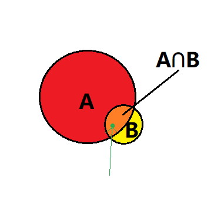

<!DOCTYPE html>
<html lang="zh" class="loading">
<head><meta name="generator" content="Hexo 3.9.0">
    <meta charset="UTF-8">
    <meta http-equiv="X-UA-Compatible" content="IE=edge,chrome=1">
    <meta name="viewport" content="width=device-width, minimum-scale=1.0, maximum-scale=1.0, user-scalable=no">
    <title>数理知识:统计决策理论|贝叶斯公式和最大似然估计笔记 - WhiteRobe&#39;s Blog</title>
    <meta name="apple-mobile-web-app-capable" content="yes">
    <meta name="apple-mobile-web-app-status-bar-style" content="black-translucent">
    <meta name="google" content="notranslate">
    <link href="https://cdnjs.cloudflare.com/ajax/libs/KaTeX/0.11.0/katex.min.css" rel="stylesheet">
    <meta name="keywords" content="WhiteRobe, Blog,"> 
    <meta name="description" content="着眼实例，从最简单的开始；你觉得再简单不过的东西，或许在别人眼里那就是悬崖。而我，愿作那攀岩绳。, 最大似然估计学习笔记
贝叶斯定理及最大(极大)似然估计(maximum−likelihoodmaximum-likelihoodmaximum−likelihood)是机器学习的数理基础。

 ①,"> 
    <meta name="author" content="WhiteRobe"> 
    <link rel="alternative" href="atom.xml" title="WhiteRobe&#39;s Blog" type="application/atom+xml"> 
    <link rel="icon" href="/img/favicon.png"> 
    <link rel="stylesheet" href="//cdn.jsdelivr.net/npm/gitalk@1/dist/gitalk.css">
    <link rel="stylesheet" href="/css/animate.css">
    <link rel="stylesheet" href="/css/fira_code.css">
    <link rel="stylesheet" href="/css/diaspora.css">
    <script async src="https://busuanzi.ibruce.info/busuanzi/2.3/busuanzi.pure.mini.js"></script>
    
        <!--站内搜索API-->
        <script src="https://cdn.jsdelivr.net/algoliasearch/3/algoliasearch.min.js"></script>
        <link rel="stylesheet" href="https://cdn.jsdelivr.net/npm/instantsearch.css@7.3.1/themes/algolia-min.css" integrity="sha256-HB49n/BZjuqiCtQQf49OdZn63XuKFaxcIHWf0HNKte8=" crossorigin="anonymous">
        <script src="https://cdn.jsdelivr.net/npm/instantsearch.js@3.4.0/dist/instantsearch.production.min.js" integrity="sha256-pM0n88cBFRHpSn0N26ETsQdwpA7WAXJDvkHeCLh3ujI=" crossorigin="anonymous"></script>
    
    <!-- <script async src="//pagead2.googlesyndication.com/pagead/js/adsbygoogle.js"></script>
    <script>
          // No more ads!
         (adsbygoogle = window.adsbygoogle || []).push({
              google_ad_client: "ca-pub-8691406134231910",
              enable_page_level_ads: true
         });
    </script>
    <script async custom-element="amp-auto-ads"
        src="https://cdn.ampproject.org/v0/amp-auto-ads-0.1.js">
    </script> -->
</head>
</html>
<body class="loading">
    <span id="config-title" style="display:none">WhiteRobe&#39;s Blog</span>
    <div id="loader"></div>
    <div id="single">
    <div id="top" style="display: block; display: block;position: fixed; top: 0px;">
    <div class="bar" style="width: 0;"></div>
    <a class="icon-home image-icon" href="javascript:;" data-url="https://blog.whiterobe.top"></a>
    <div title="播放/暂停" class="icon-play"></div>
    <h3 class="subtitle">数理知识:统计决策理论|贝叶斯公式和最大似然估计笔记</h3>
    <div class="social">
        <!--<div class="like-icon">-->
            <!--<a href="javascript:;" class="likeThis active"><span class="icon-like"></span><span class="count">76</span></a>-->
        <!--</div>-->
        <div style="font-size: 1rem;margin-right: -10px">
          分享此文：
        </div>
        <div>
          <div class="share">
              <a title="获取文章地址二维码" class="icon-scan" href="javascript:;"></a>
          </div>
          <div id="qr"></div>
        </div>
    </div>
    <div class="scrollbar"></div>
</div>

    <div class="section" style="margin-top: 50px">
        <div class="article">
    <div class='main'>
        <h1 class="title">数理知识:统计决策理论|贝叶斯公式和最大似然估计笔记</h1>
        <div class="stuff">
            <span>九月 07, 2019</span>
            <span id="busuanzi_container_page_pv" class="busuanzi_page" style="display:none">本文总阅读量<div id="busuanzi_value_page_pv" style="display: inline;">1</div>次</span>
            
  <ul class="post-tags-list"><li class="post-tags-list-item"><a class="post-tags-list-link" href="/tags/工程优化/">工程优化</a></li><li class="post-tags-list-item"><a class="post-tags-list-link" href="/tags/数理逻辑/">数理逻辑</a></li><li class="post-tags-list-item"><a class="post-tags-list-link" href="/tags/机器学习/">机器学习</a></li><li class="post-tags-list-item"><a class="post-tags-list-link" href="/tags/概率论/">概率论</a></li><li class="post-tags-list-item"><a class="post-tags-list-link" href="/tags/算法/">算法</a></li></ul>


        </div>
        <div class="low-resolution-warn-info">当前设备屏幕尺寸过小，推荐使用PC模式浏览。</div>
        <div class="content markdown">
            <h1 id="最大似然估计学习笔记"><a class="markdownIt-Anchor" href="#最大似然估计学习笔记"></a> 最大似然估计学习笔记</h1>
<p>贝叶斯定理及最大(极大)似然估计(<span class="katex"><span class="katex-mathml"><math><semantics><mrow><mi>m</mi><mi>a</mi><mi>x</mi><mi>i</mi><mi>m</mi><mi>u</mi><mi>m</mi><mo>−</mo><mi>l</mi><mi>i</mi><mi>k</mi><mi>e</mi><mi>l</mi><mi>i</mi><mi>h</mi><mi>o</mi><mi>o</mi><mi>d</mi></mrow><annotation encoding="application/x-tex">maximum-likelihood</annotation></semantics></math></span><span class="katex-html" aria-hidden="true"><span class="base"><span class="strut" style="height:0.74285em;vertical-align:-0.08333em;"></span><span class="mord mathdefault">m</span><span class="mord mathdefault">a</span><span class="mord mathdefault">x</span><span class="mord mathdefault">i</span><span class="mord mathdefault">m</span><span class="mord mathdefault">u</span><span class="mord mathdefault">m</span><span class="mspace" style="margin-right:0.2222222222222222em;"></span><span class="mbin">−</span><span class="mspace" style="margin-right:0.2222222222222222em;"></span></span><span class="base"><span class="strut" style="height:0.69444em;vertical-align:0em;"></span><span class="mord mathdefault" style="margin-right:0.01968em;">l</span><span class="mord mathdefault">i</span><span class="mord mathdefault" style="margin-right:0.03148em;">k</span><span class="mord mathdefault">e</span><span class="mord mathdefault" style="margin-right:0.01968em;">l</span><span class="mord mathdefault">i</span><span class="mord mathdefault">h</span><span class="mord mathdefault">o</span><span class="mord mathdefault">o</span><span class="mord mathdefault">d</span></span></span></span>)是机器学习的数理基础。</p>
<hr>
<h2 id="1-条件概率"><a class="markdownIt-Anchor" href="#1-条件概率"></a> ① 条件概率</h2>
<p><strong>定义1</strong> 若A、B是独立事件，即AB事件相互独立，则有：</p>
<p class="katex-block"><span class="katex-display"><span class="katex"><span class="katex-mathml"><math><semantics><mrow><mi>P</mi><mo stretchy="false">(</mo><mi>A</mi><mi>B</mi><mo stretchy="false">)</mo><mo>=</mo><mi>P</mi><mo stretchy="false">(</mo><mi>A</mi><mo stretchy="false">)</mo><mi>P</mi><mo stretchy="false">(</mo><mi>B</mi><mo stretchy="false">)</mo></mrow><annotation encoding="application/x-tex">P(AB)=P(A)P(B) 
</annotation></semantics></math></span><span class="katex-html" aria-hidden="true"><span class="base"><span class="strut" style="height:1em;vertical-align:-0.25em;"></span><span class="mord mathdefault" style="margin-right:0.13889em;">P</span><span class="mopen">(</span><span class="mord mathdefault">A</span><span class="mord mathdefault" style="margin-right:0.05017em;">B</span><span class="mclose">)</span><span class="mspace" style="margin-right:0.2777777777777778em;"></span><span class="mrel">=</span><span class="mspace" style="margin-right:0.2777777777777778em;"></span></span><span class="base"><span class="strut" style="height:1em;vertical-align:-0.25em;"></span><span class="mord mathdefault" style="margin-right:0.13889em;">P</span><span class="mopen">(</span><span class="mord mathdefault">A</span><span class="mclose">)</span><span class="mord mathdefault" style="margin-right:0.13889em;">P</span><span class="mopen">(</span><span class="mord mathdefault" style="margin-right:0.05017em;">B</span><span class="mclose">)</span></span></span></span></span></p>
<p><strong>定义2</strong> 若A、B为事件且事件A为正概率，在事件A发生的条件下事件B发生的条件概率为：</p>
<p class="katex-block"><span class="katex-display"><span class="katex"><span class="katex-mathml"><math><semantics><mrow><mi>P</mi><mo stretchy="false">(</mo><mi>B</mi><mi mathvariant="normal">∣</mi><mi>A</mi><mo stretchy="false">)</mo><mo>=</mo><mfrac><mrow><mi>P</mi><mo stretchy="false">(</mo><mi>A</mi><mi>B</mi><mo stretchy="false">)</mo></mrow><mrow><mi>P</mi><mo stretchy="false">(</mo><mi>A</mi><mo stretchy="false">)</mo></mrow></mfrac></mrow><annotation encoding="application/x-tex">P(B|A)=\frac{P(AB)}{P(A)}
</annotation></semantics></math></span><span class="katex-html" aria-hidden="true"><span class="base"><span class="strut" style="height:1em;vertical-align:-0.25em;"></span><span class="mord mathdefault" style="margin-right:0.13889em;">P</span><span class="mopen">(</span><span class="mord mathdefault" style="margin-right:0.05017em;">B</span><span class="mord">∣</span><span class="mord mathdefault">A</span><span class="mclose">)</span><span class="mspace" style="margin-right:0.2777777777777778em;"></span><span class="mrel">=</span><span class="mspace" style="margin-right:0.2777777777777778em;"></span></span><span class="base"><span class="strut" style="height:2.363em;vertical-align:-0.936em;"></span><span class="mord"><span class="mopen nulldelimiter"></span><span class="mfrac"><span class="vlist-t vlist-t2"><span class="vlist-r"><span class="vlist" style="height:1.427em;"><span style="top:-2.314em;"><span class="pstrut" style="height:3em;"></span><span class="mord"><span class="mord mathdefault" style="margin-right:0.13889em;">P</span><span class="mopen">(</span><span class="mord mathdefault">A</span><span class="mclose">)</span></span></span><span style="top:-3.23em;"><span class="pstrut" style="height:3em;"></span><span class="frac-line" style="border-bottom-width:0.04em;"></span></span><span style="top:-3.677em;"><span class="pstrut" style="height:3em;"></span><span class="mord"><span class="mord mathdefault" style="margin-right:0.13889em;">P</span><span class="mopen">(</span><span class="mord mathdefault">A</span><span class="mord mathdefault" style="margin-right:0.05017em;">B</span><span class="mclose">)</span></span></span></span><span class="vlist-s">​</span></span><span class="vlist-r"><span class="vlist" style="height:0.936em;"><span></span></span></span></span></span><span class="mclose nulldelimiter"></span></span></span></span></span></span></p>
<p><strong>公式1</strong> (乘法公式)设<span class="katex"><span class="katex-mathml"><math><semantics><mrow><msub><mi>A</mi><mn>1</mn></msub><mo separator="true">,</mo><msub><mi>A</mi><mn>2</mn></msub><mi mathvariant="normal">.</mi><mi mathvariant="normal">.</mi><mi mathvariant="normal">.</mi><mi mathvariant="normal">.</mi><msub><mi>A</mi><mi>n</mi></msub></mrow><annotation encoding="application/x-tex">A_1,A_2....A_n</annotation></semantics></math></span><span class="katex-html" aria-hidden="true"><span class="base"><span class="strut" style="height:0.8777699999999999em;vertical-align:-0.19444em;"></span><span class="mord"><span class="mord mathdefault">A</span><span class="msupsub"><span class="vlist-t vlist-t2"><span class="vlist-r"><span class="vlist" style="height:0.30110799999999993em;"><span style="top:-2.5500000000000003em;margin-left:0em;margin-right:0.05em;"><span class="pstrut" style="height:2.7em;"></span><span class="sizing reset-size6 size3 mtight"><span class="mord mtight">1</span></span></span></span><span class="vlist-s">​</span></span><span class="vlist-r"><span class="vlist" style="height:0.15em;"><span></span></span></span></span></span></span><span class="mpunct">,</span><span class="mspace" style="margin-right:0.16666666666666666em;"></span><span class="mord"><span class="mord mathdefault">A</span><span class="msupsub"><span class="vlist-t vlist-t2"><span class="vlist-r"><span class="vlist" style="height:0.30110799999999993em;"><span style="top:-2.5500000000000003em;margin-left:0em;margin-right:0.05em;"><span class="pstrut" style="height:2.7em;"></span><span class="sizing reset-size6 size3 mtight"><span class="mord mtight">2</span></span></span></span><span class="vlist-s">​</span></span><span class="vlist-r"><span class="vlist" style="height:0.15em;"><span></span></span></span></span></span></span><span class="mord">.</span><span class="mord">.</span><span class="mord">.</span><span class="mord">.</span><span class="mord"><span class="mord mathdefault">A</span><span class="msupsub"><span class="vlist-t vlist-t2"><span class="vlist-r"><span class="vlist" style="height:0.151392em;"><span style="top:-2.5500000000000003em;margin-left:0em;margin-right:0.05em;"><span class="pstrut" style="height:2.7em;"></span><span class="sizing reset-size6 size3 mtight"><span class="mord mathdefault mtight">n</span></span></span></span><span class="vlist-s">​</span></span><span class="vlist-r"><span class="vlist" style="height:0.15em;"><span></span></span></span></span></span></span></span></span></span>为事件且均为正概率，则有</p>
<p class="katex-block"><span class="katex-display"><span class="katex"><span class="katex-mathml"><math><semantics><mrow><mi>P</mi><mo stretchy="false">(</mo><msub><mi>A</mi><mn>1</mn></msub><msub><mi>A</mi><mn>2</mn></msub><mi mathvariant="normal">.</mi><mi mathvariant="normal">.</mi><mi mathvariant="normal">.</mi><msub><mi>A</mi><mi>n</mi></msub><mo stretchy="false">)</mo><mo>=</mo><mi>P</mi><mo stretchy="false">(</mo><msub><mi>A</mi><mn>1</mn></msub><mo stretchy="false">)</mo><mi>P</mi><mo stretchy="false">(</mo><msub><mi>A</mi><mn>2</mn></msub><mi mathvariant="normal">∣</mi><msub><mi>A</mi><mn>1</mn></msub><mo stretchy="false">)</mo><mi>P</mi><mo stretchy="false">(</mo><msub><mi>A</mi><mn>3</mn></msub><mi mathvariant="normal">∣</mi><msub><mi>A</mi><mn>1</mn></msub><msub><mi>A</mi><mn>2</mn></msub><mo stretchy="false">)</mo><mi mathvariant="normal">.</mi><mi mathvariant="normal">.</mi><mi mathvariant="normal">.</mi><mi>P</mi><mo stretchy="false">(</mo><msub><mi>A</mi><mi>n</mi></msub><mi mathvariant="normal">∣</mi><msub><mi>A</mi><mn>1</mn></msub><msub><mi>A</mi><mn>2</mn></msub><mi mathvariant="normal">.</mi><mi mathvariant="normal">.</mi><mi mathvariant="normal">.</mi><msub><mi>A</mi><mi>n</mi></msub><mo stretchy="false">)</mo></mrow><annotation encoding="application/x-tex">P(A_1A_2...A_n)=P(A_1)P(A_2|A_1)P(A_3|A_1A_2)...P(A_n|A_1A_2...A_n) 
</annotation></semantics></math></span><span class="katex-html" aria-hidden="true"><span class="base"><span class="strut" style="height:1em;vertical-align:-0.25em;"></span><span class="mord mathdefault" style="margin-right:0.13889em;">P</span><span class="mopen">(</span><span class="mord"><span class="mord mathdefault">A</span><span class="msupsub"><span class="vlist-t vlist-t2"><span class="vlist-r"><span class="vlist" style="height:0.30110799999999993em;"><span style="top:-2.5500000000000003em;margin-left:0em;margin-right:0.05em;"><span class="pstrut" style="height:2.7em;"></span><span class="sizing reset-size6 size3 mtight"><span class="mord mtight">1</span></span></span></span><span class="vlist-s">​</span></span><span class="vlist-r"><span class="vlist" style="height:0.15em;"><span></span></span></span></span></span></span><span class="mord"><span class="mord mathdefault">A</span><span class="msupsub"><span class="vlist-t vlist-t2"><span class="vlist-r"><span class="vlist" style="height:0.30110799999999993em;"><span style="top:-2.5500000000000003em;margin-left:0em;margin-right:0.05em;"><span class="pstrut" style="height:2.7em;"></span><span class="sizing reset-size6 size3 mtight"><span class="mord mtight">2</span></span></span></span><span class="vlist-s">​</span></span><span class="vlist-r"><span class="vlist" style="height:0.15em;"><span></span></span></span></span></span></span><span class="mord">.</span><span class="mord">.</span><span class="mord">.</span><span class="mord"><span class="mord mathdefault">A</span><span class="msupsub"><span class="vlist-t vlist-t2"><span class="vlist-r"><span class="vlist" style="height:0.151392em;"><span style="top:-2.5500000000000003em;margin-left:0em;margin-right:0.05em;"><span class="pstrut" style="height:2.7em;"></span><span class="sizing reset-size6 size3 mtight"><span class="mord mathdefault mtight">n</span></span></span></span><span class="vlist-s">​</span></span><span class="vlist-r"><span class="vlist" style="height:0.15em;"><span></span></span></span></span></span></span><span class="mclose">)</span><span class="mspace" style="margin-right:0.2777777777777778em;"></span><span class="mrel">=</span><span class="mspace" style="margin-right:0.2777777777777778em;"></span></span><span class="base"><span class="strut" style="height:1em;vertical-align:-0.25em;"></span><span class="mord mathdefault" style="margin-right:0.13889em;">P</span><span class="mopen">(</span><span class="mord"><span class="mord mathdefault">A</span><span class="msupsub"><span class="vlist-t vlist-t2"><span class="vlist-r"><span class="vlist" style="height:0.30110799999999993em;"><span style="top:-2.5500000000000003em;margin-left:0em;margin-right:0.05em;"><span class="pstrut" style="height:2.7em;"></span><span class="sizing reset-size6 size3 mtight"><span class="mord mtight">1</span></span></span></span><span class="vlist-s">​</span></span><span class="vlist-r"><span class="vlist" style="height:0.15em;"><span></span></span></span></span></span></span><span class="mclose">)</span><span class="mord mathdefault" style="margin-right:0.13889em;">P</span><span class="mopen">(</span><span class="mord"><span class="mord mathdefault">A</span><span class="msupsub"><span class="vlist-t vlist-t2"><span class="vlist-r"><span class="vlist" style="height:0.30110799999999993em;"><span style="top:-2.5500000000000003em;margin-left:0em;margin-right:0.05em;"><span class="pstrut" style="height:2.7em;"></span><span class="sizing reset-size6 size3 mtight"><span class="mord mtight">2</span></span></span></span><span class="vlist-s">​</span></span><span class="vlist-r"><span class="vlist" style="height:0.15em;"><span></span></span></span></span></span></span><span class="mord">∣</span><span class="mord"><span class="mord mathdefault">A</span><span class="msupsub"><span class="vlist-t vlist-t2"><span class="vlist-r"><span class="vlist" style="height:0.30110799999999993em;"><span style="top:-2.5500000000000003em;margin-left:0em;margin-right:0.05em;"><span class="pstrut" style="height:2.7em;"></span><span class="sizing reset-size6 size3 mtight"><span class="mord mtight">1</span></span></span></span><span class="vlist-s">​</span></span><span class="vlist-r"><span class="vlist" style="height:0.15em;"><span></span></span></span></span></span></span><span class="mclose">)</span><span class="mord mathdefault" style="margin-right:0.13889em;">P</span><span class="mopen">(</span><span class="mord"><span class="mord mathdefault">A</span><span class="msupsub"><span class="vlist-t vlist-t2"><span class="vlist-r"><span class="vlist" style="height:0.30110799999999993em;"><span style="top:-2.5500000000000003em;margin-left:0em;margin-right:0.05em;"><span class="pstrut" style="height:2.7em;"></span><span class="sizing reset-size6 size3 mtight"><span class="mord mtight">3</span></span></span></span><span class="vlist-s">​</span></span><span class="vlist-r"><span class="vlist" style="height:0.15em;"><span></span></span></span></span></span></span><span class="mord">∣</span><span class="mord"><span class="mord mathdefault">A</span><span class="msupsub"><span class="vlist-t vlist-t2"><span class="vlist-r"><span class="vlist" style="height:0.30110799999999993em;"><span style="top:-2.5500000000000003em;margin-left:0em;margin-right:0.05em;"><span class="pstrut" style="height:2.7em;"></span><span class="sizing reset-size6 size3 mtight"><span class="mord mtight">1</span></span></span></span><span class="vlist-s">​</span></span><span class="vlist-r"><span class="vlist" style="height:0.15em;"><span></span></span></span></span></span></span><span class="mord"><span class="mord mathdefault">A</span><span class="msupsub"><span class="vlist-t vlist-t2"><span class="vlist-r"><span class="vlist" style="height:0.30110799999999993em;"><span style="top:-2.5500000000000003em;margin-left:0em;margin-right:0.05em;"><span class="pstrut" style="height:2.7em;"></span><span class="sizing reset-size6 size3 mtight"><span class="mord mtight">2</span></span></span></span><span class="vlist-s">​</span></span><span class="vlist-r"><span class="vlist" style="height:0.15em;"><span></span></span></span></span></span></span><span class="mclose">)</span><span class="mord">.</span><span class="mord">.</span><span class="mord">.</span><span class="mord mathdefault" style="margin-right:0.13889em;">P</span><span class="mopen">(</span><span class="mord"><span class="mord mathdefault">A</span><span class="msupsub"><span class="vlist-t vlist-t2"><span class="vlist-r"><span class="vlist" style="height:0.151392em;"><span style="top:-2.5500000000000003em;margin-left:0em;margin-right:0.05em;"><span class="pstrut" style="height:2.7em;"></span><span class="sizing reset-size6 size3 mtight"><span class="mord mathdefault mtight">n</span></span></span></span><span class="vlist-s">​</span></span><span class="vlist-r"><span class="vlist" style="height:0.15em;"><span></span></span></span></span></span></span><span class="mord">∣</span><span class="mord"><span class="mord mathdefault">A</span><span class="msupsub"><span class="vlist-t vlist-t2"><span class="vlist-r"><span class="vlist" style="height:0.30110799999999993em;"><span style="top:-2.5500000000000003em;margin-left:0em;margin-right:0.05em;"><span class="pstrut" style="height:2.7em;"></span><span class="sizing reset-size6 size3 mtight"><span class="mord mtight">1</span></span></span></span><span class="vlist-s">​</span></span><span class="vlist-r"><span class="vlist" style="height:0.15em;"><span></span></span></span></span></span></span><span class="mord"><span class="mord mathdefault">A</span><span class="msupsub"><span class="vlist-t vlist-t2"><span class="vlist-r"><span class="vlist" style="height:0.30110799999999993em;"><span style="top:-2.5500000000000003em;margin-left:0em;margin-right:0.05em;"><span class="pstrut" style="height:2.7em;"></span><span class="sizing reset-size6 size3 mtight"><span class="mord mtight">2</span></span></span></span><span class="vlist-s">​</span></span><span class="vlist-r"><span class="vlist" style="height:0.15em;"><span></span></span></span></span></span></span><span class="mord">.</span><span class="mord">.</span><span class="mord">.</span><span class="mord"><span class="mord mathdefault">A</span><span class="msupsub"><span class="vlist-t vlist-t2"><span class="vlist-r"><span class="vlist" style="height:0.151392em;"><span style="top:-2.5500000000000003em;margin-left:0em;margin-right:0.05em;"><span class="pstrut" style="height:2.7em;"></span><span class="sizing reset-size6 size3 mtight"><span class="mord mathdefault mtight">n</span></span></span></span><span class="vlist-s">​</span></span><span class="vlist-r"><span class="vlist" style="height:0.15em;"><span></span></span></span></span></span></span><span class="mclose">)</span></span></span></span></span></p>
<p><strong>公式2</strong> (全概率公式)若<span class="katex"><span class="katex-mathml"><math><semantics><mrow><msub><mi>B</mi><mn>1</mn></msub><mo separator="true">,</mo><msub><mi>B</mi><mn>2</mn></msub><mi mathvariant="normal">.</mi><mi mathvariant="normal">.</mi><mi mathvariant="normal">.</mi><mi mathvariant="normal">.</mi><msub><mi>B</mi><mi>n</mi></msub></mrow><annotation encoding="application/x-tex">B_1,B_2....B_n</annotation></semantics></math></span><span class="katex-html" aria-hidden="true"><span class="base"><span class="strut" style="height:0.8777699999999999em;vertical-align:-0.19444em;"></span><span class="mord"><span class="mord mathdefault" style="margin-right:0.05017em;">B</span><span class="msupsub"><span class="vlist-t vlist-t2"><span class="vlist-r"><span class="vlist" style="height:0.30110799999999993em;"><span style="top:-2.5500000000000003em;margin-left:-0.05017em;margin-right:0.05em;"><span class="pstrut" style="height:2.7em;"></span><span class="sizing reset-size6 size3 mtight"><span class="mord mtight">1</span></span></span></span><span class="vlist-s">​</span></span><span class="vlist-r"><span class="vlist" style="height:0.15em;"><span></span></span></span></span></span></span><span class="mpunct">,</span><span class="mspace" style="margin-right:0.16666666666666666em;"></span><span class="mord"><span class="mord mathdefault" style="margin-right:0.05017em;">B</span><span class="msupsub"><span class="vlist-t vlist-t2"><span class="vlist-r"><span class="vlist" style="height:0.30110799999999993em;"><span style="top:-2.5500000000000003em;margin-left:-0.05017em;margin-right:0.05em;"><span class="pstrut" style="height:2.7em;"></span><span class="sizing reset-size6 size3 mtight"><span class="mord mtight">2</span></span></span></span><span class="vlist-s">​</span></span><span class="vlist-r"><span class="vlist" style="height:0.15em;"><span></span></span></span></span></span></span><span class="mord">.</span><span class="mord">.</span><span class="mord">.</span><span class="mord">.</span><span class="mord"><span class="mord mathdefault" style="margin-right:0.05017em;">B</span><span class="msupsub"><span class="vlist-t vlist-t2"><span class="vlist-r"><span class="vlist" style="height:0.151392em;"><span style="top:-2.5500000000000003em;margin-left:-0.05017em;margin-right:0.05em;"><span class="pstrut" style="height:2.7em;"></span><span class="sizing reset-size6 size3 mtight"><span class="mord mathdefault mtight">n</span></span></span></span><span class="vlist-s">​</span></span><span class="vlist-r"><span class="vlist" style="height:0.15em;"><span></span></span></span></span></span></span></span></span></span>均为正概率事件且两两不相容，即<span class="katex"><span class="katex-mathml"><math><semantics><mrow><msub><mi>B</mi><mi>i</mi></msub><msub><mi>B</mi><mi>j</mi></msub><mo>=</mo><mi mathvariant="normal">∅</mi><mo stretchy="false">(</mo><mi>i</mi><mo>=</mo><mi>j̸</mi><mo separator="true">;</mo><mi>i</mi><mo separator="true">,</mo><mi>j</mi><mo>=</mo><mn>1</mn><mo separator="true">,</mo><mn>2</mn><mo separator="true">,</mo><mi mathvariant="normal">.</mi><mi mathvariant="normal">.</mi><mi mathvariant="normal">.</mi><mi>n</mi><mo stretchy="false">)</mo></mrow><annotation encoding="application/x-tex">B_iB_j=\emptyset(i =\not j;i,j=1,2,...n)</annotation></semantics></math></span><span class="katex-html" aria-hidden="true"><span class="base"><span class="strut" style="height:0.969438em;vertical-align:-0.286108em;"></span><span class="mord"><span class="mord mathdefault" style="margin-right:0.05017em;">B</span><span class="msupsub"><span class="vlist-t vlist-t2"><span class="vlist-r"><span class="vlist" style="height:0.31166399999999994em;"><span style="top:-2.5500000000000003em;margin-left:-0.05017em;margin-right:0.05em;"><span class="pstrut" style="height:2.7em;"></span><span class="sizing reset-size6 size3 mtight"><span class="mord mathdefault mtight">i</span></span></span></span><span class="vlist-s">​</span></span><span class="vlist-r"><span class="vlist" style="height:0.15em;"><span></span></span></span></span></span></span><span class="mord"><span class="mord mathdefault" style="margin-right:0.05017em;">B</span><span class="msupsub"><span class="vlist-t vlist-t2"><span class="vlist-r"><span class="vlist" style="height:0.311664em;"><span style="top:-2.5500000000000003em;margin-left:-0.05017em;margin-right:0.05em;"><span class="pstrut" style="height:2.7em;"></span><span class="sizing reset-size6 size3 mtight"><span class="mord mathdefault mtight" style="margin-right:0.05724em;">j</span></span></span></span><span class="vlist-s">​</span></span><span class="vlist-r"><span class="vlist" style="height:0.286108em;"><span></span></span></span></span></span></span><span class="mspace" style="margin-right:0.2777777777777778em;"></span><span class="mrel">=</span><span class="mspace" style="margin-right:0.2777777777777778em;"></span></span><span class="base"><span class="strut" style="height:1em;vertical-align:-0.25em;"></span><span class="mord">∅</span><span class="mopen">(</span><span class="mord mathdefault">i</span><span class="mspace" style="margin-right:0.2777777777777778em;"></span><span class="mrel">=</span></span><span class="base"><span class="strut" style="height:0.8888799999999999em;vertical-align:-0.19444em;"></span><span class="mrel"><span class="mord"><span class="vlist-t vlist-t2"><span class="vlist-r"><span class="vlist" style="height:0.69444em;"><span style="top:-3em;"><span class="pstrut" style="height:3em;"></span><span class="rlap"><span class="strut" style="height:0.8888799999999999em;vertical-align:-0.19444em;"></span><span class="inner"><span class="mrel"></span></span><span class="fix"></span></span></span></span><span class="vlist-s">​</span></span><span class="vlist-r"><span class="vlist" style="height:0.19444em;"><span></span></span></span></span></span></span><span class="mspace" style="margin-right:0.2777777777777778em;"></span></span><span class="base"><span class="strut" style="height:0.85396em;vertical-align:-0.19444em;"></span><span class="mord mathdefault" style="margin-right:0.05724em;">j</span><span class="mpunct">;</span><span class="mspace" style="margin-right:0.16666666666666666em;"></span><span class="mord mathdefault">i</span><span class="mpunct">,</span><span class="mspace" style="margin-right:0.16666666666666666em;"></span><span class="mord mathdefault" style="margin-right:0.05724em;">j</span><span class="mspace" style="margin-right:0.2777777777777778em;"></span><span class="mrel">=</span><span class="mspace" style="margin-right:0.2777777777777778em;"></span></span><span class="base"><span class="strut" style="height:1em;vertical-align:-0.25em;"></span><span class="mord">1</span><span class="mpunct">,</span><span class="mspace" style="margin-right:0.16666666666666666em;"></span><span class="mord">2</span><span class="mpunct">,</span><span class="mspace" style="margin-right:0.16666666666666666em;"></span><span class="mord">.</span><span class="mord">.</span><span class="mord">.</span><span class="mord mathdefault">n</span><span class="mclose">)</span></span></span></span>，又有<span class="katex"><span class="katex-mathml"><math><semantics><mrow><msubsup><mo>⋃</mo><mrow><mi>i</mi><mo>=</mo><mn>1</mn></mrow><mi>n</mi></msubsup><msub><mi>B</mi><mi>i</mi></msub><mo>=</mo><mi mathvariant="normal">Ω</mi></mrow><annotation encoding="application/x-tex">\bigcup_{i=1}^{n} B_i=\Omega</annotation></semantics></math></span><span class="katex-html" aria-hidden="true"><span class="base"><span class="strut" style="height:1.104002em;vertical-align:-0.29971000000000003em;"></span><span class="mop"><span class="mop op-symbol small-op" style="position:relative;top:-0.0000050000000000050004em;">⋃</span><span class="msupsub"><span class="vlist-t vlist-t2"><span class="vlist-r"><span class="vlist" style="height:0.804292em;"><span style="top:-2.40029em;margin-left:0em;margin-right:0.05em;"><span class="pstrut" style="height:2.7em;"></span><span class="sizing reset-size6 size3 mtight"><span class="mord mtight"><span class="mord mathdefault mtight">i</span><span class="mrel mtight">=</span><span class="mord mtight">1</span></span></span></span><span style="top:-3.2029em;margin-right:0.05em;"><span class="pstrut" style="height:2.7em;"></span><span class="sizing reset-size6 size3 mtight"><span class="mord mtight"><span class="mord mathdefault mtight">n</span></span></span></span></span><span class="vlist-s">​</span></span><span class="vlist-r"><span class="vlist" style="height:0.29971000000000003em;"><span></span></span></span></span></span></span><span class="mspace" style="margin-right:0.16666666666666666em;"></span><span class="mord"><span class="mord mathdefault" style="margin-right:0.05017em;">B</span><span class="msupsub"><span class="vlist-t vlist-t2"><span class="vlist-r"><span class="vlist" style="height:0.31166399999999994em;"><span style="top:-2.5500000000000003em;margin-left:-0.05017em;margin-right:0.05em;"><span class="pstrut" style="height:2.7em;"></span><span class="sizing reset-size6 size3 mtight"><span class="mord mathdefault mtight">i</span></span></span></span><span class="vlist-s">​</span></span><span class="vlist-r"><span class="vlist" style="height:0.15em;"><span></span></span></span></span></span></span><span class="mspace" style="margin-right:0.2777777777777778em;"></span><span class="mrel">=</span><span class="mspace" style="margin-right:0.2777777777777778em;"></span></span><span class="base"><span class="strut" style="height:0.68333em;vertical-align:0em;"></span><span class="mord">Ω</span></span></span></span>，其中<span class="katex"><span class="katex-mathml"><math><semantics><mrow><mi mathvariant="normal">Ω</mi></mrow><annotation encoding="application/x-tex">\Omega</annotation></semantics></math></span><span class="katex-html" aria-hidden="true"><span class="base"><span class="strut" style="height:0.68333em;vertical-align:0em;"></span><span class="mord">Ω</span></span></span></span>为样本空间，则称<span class="katex"><span class="katex-mathml"><math><semantics><mrow><msub><mi>B</mi><mi>n</mi></msub></mrow><annotation encoding="application/x-tex">B_n</annotation></semantics></math></span><span class="katex-html" aria-hidden="true"><span class="base"><span class="strut" style="height:0.83333em;vertical-align:-0.15em;"></span><span class="mord"><span class="mord mathdefault" style="margin-right:0.05017em;">B</span><span class="msupsub"><span class="vlist-t vlist-t2"><span class="vlist-r"><span class="vlist" style="height:0.151392em;"><span style="top:-2.5500000000000003em;margin-left:-0.05017em;margin-right:0.05em;"><span class="pstrut" style="height:2.7em;"></span><span class="sizing reset-size6 size3 mtight"><span class="mord mathdefault mtight">n</span></span></span></span><span class="vlist-s">​</span></span><span class="vlist-r"><span class="vlist" style="height:0.15em;"><span></span></span></span></span></span></span></span></span></span>为该样本空间中的划分。对于样本空间内的随机事件<span class="katex"><span class="katex-mathml"><math><semantics><mrow><mi>A</mi></mrow><annotation encoding="application/x-tex">A</annotation></semantics></math></span><span class="katex-html" aria-hidden="true"><span class="base"><span class="strut" style="height:0.68333em;vertical-align:0em;"></span><span class="mord mathdefault">A</span></span></span></span>则有</p>
<p class="katex-block"><span class="katex-display"><span class="katex"><span class="katex-mathml"><math><semantics><mrow><mi>P</mi><mo stretchy="false">(</mo><mi>A</mi><mo stretchy="false">)</mo><mo>=</mo><munderover><mo>∑</mo><mrow><mi>i</mi><mo>=</mo><mn>1</mn></mrow><mi>n</mi></munderover><mi>P</mi><mo stretchy="false">(</mo><msub><mi>B</mi><mi>i</mi></msub><mo stretchy="false">)</mo><mi>P</mi><mo stretchy="false">(</mo><mi>A</mi><mi mathvariant="normal">∣</mi><msub><mi>B</mi><mi>i</mi></msub><mo stretchy="false">)</mo></mrow><annotation encoding="application/x-tex">P(A)=\sum_{i=1}^{n}P(B_i)P(A|B_i)
</annotation></semantics></math></span><span class="katex-html" aria-hidden="true"><span class="base"><span class="strut" style="height:1em;vertical-align:-0.25em;"></span><span class="mord mathdefault" style="margin-right:0.13889em;">P</span><span class="mopen">(</span><span class="mord mathdefault">A</span><span class="mclose">)</span><span class="mspace" style="margin-right:0.2777777777777778em;"></span><span class="mrel">=</span><span class="mspace" style="margin-right:0.2777777777777778em;"></span></span><span class="base"><span class="strut" style="height:2.929066em;vertical-align:-1.277669em;"></span><span class="mop op-limits"><span class="vlist-t vlist-t2"><span class="vlist-r"><span class="vlist" style="height:1.6513970000000002em;"><span style="top:-1.872331em;margin-left:0em;"><span class="pstrut" style="height:3.05em;"></span><span class="sizing reset-size6 size3 mtight"><span class="mord mtight"><span class="mord mathdefault mtight">i</span><span class="mrel mtight">=</span><span class="mord mtight">1</span></span></span></span><span style="top:-3.050005em;"><span class="pstrut" style="height:3.05em;"></span><span><span class="mop op-symbol large-op">∑</span></span></span><span style="top:-4.3000050000000005em;margin-left:0em;"><span class="pstrut" style="height:3.05em;"></span><span class="sizing reset-size6 size3 mtight"><span class="mord mtight"><span class="mord mathdefault mtight">n</span></span></span></span></span><span class="vlist-s">​</span></span><span class="vlist-r"><span class="vlist" style="height:1.277669em;"><span></span></span></span></span></span><span class="mspace" style="margin-right:0.16666666666666666em;"></span><span class="mord mathdefault" style="margin-right:0.13889em;">P</span><span class="mopen">(</span><span class="mord"><span class="mord mathdefault" style="margin-right:0.05017em;">B</span><span class="msupsub"><span class="vlist-t vlist-t2"><span class="vlist-r"><span class="vlist" style="height:0.31166399999999994em;"><span style="top:-2.5500000000000003em;margin-left:-0.05017em;margin-right:0.05em;"><span class="pstrut" style="height:2.7em;"></span><span class="sizing reset-size6 size3 mtight"><span class="mord mathdefault mtight">i</span></span></span></span><span class="vlist-s">​</span></span><span class="vlist-r"><span class="vlist" style="height:0.15em;"><span></span></span></span></span></span></span><span class="mclose">)</span><span class="mord mathdefault" style="margin-right:0.13889em;">P</span><span class="mopen">(</span><span class="mord mathdefault">A</span><span class="mord">∣</span><span class="mord"><span class="mord mathdefault" style="margin-right:0.05017em;">B</span><span class="msupsub"><span class="vlist-t vlist-t2"><span class="vlist-r"><span class="vlist" style="height:0.31166399999999994em;"><span style="top:-2.5500000000000003em;margin-left:-0.05017em;margin-right:0.05em;"><span class="pstrut" style="height:2.7em;"></span><span class="sizing reset-size6 size3 mtight"><span class="mord mathdefault mtight">i</span></span></span></span><span class="vlist-s">​</span></span><span class="vlist-r"><span class="vlist" style="height:0.15em;"><span></span></span></span></span></span></span><span class="mclose">)</span></span></span></span></span></p>
<p><strong>公式3</strong> (贝叶斯公式)设<span class="katex"><span class="katex-mathml"><math><semantics><mrow><mi mathvariant="normal">Ω</mi></mrow><annotation encoding="application/x-tex">\Omega</annotation></semantics></math></span><span class="katex-html" aria-hidden="true"><span class="base"><span class="strut" style="height:0.68333em;vertical-align:0em;"></span><span class="mord">Ω</span></span></span></span>为样本空间，<span class="katex"><span class="katex-mathml"><math><semantics><mrow><mi>A</mi></mrow><annotation encoding="application/x-tex">A</annotation></semantics></math></span><span class="katex-html" aria-hidden="true"><span class="base"><span class="strut" style="height:0.68333em;vertical-align:0em;"></span><span class="mord mathdefault">A</span></span></span></span>为其中的随机事件，<span class="katex"><span class="katex-mathml"><math><semantics><mrow><msub><mi>B</mi><mn>1</mn></msub><mi mathvariant="normal">.</mi><mi mathvariant="normal">.</mi><mi mathvariant="normal">.</mi><msub><mi>B</mi><mi>n</mi></msub></mrow><annotation encoding="application/x-tex">B_1...B_n</annotation></semantics></math></span><span class="katex-html" aria-hidden="true"><span class="base"><span class="strut" style="height:0.83333em;vertical-align:-0.15em;"></span><span class="mord"><span class="mord mathdefault" style="margin-right:0.05017em;">B</span><span class="msupsub"><span class="vlist-t vlist-t2"><span class="vlist-r"><span class="vlist" style="height:0.30110799999999993em;"><span style="top:-2.5500000000000003em;margin-left:-0.05017em;margin-right:0.05em;"><span class="pstrut" style="height:2.7em;"></span><span class="sizing reset-size6 size3 mtight"><span class="mord mtight">1</span></span></span></span><span class="vlist-s">​</span></span><span class="vlist-r"><span class="vlist" style="height:0.15em;"><span></span></span></span></span></span></span><span class="mord">.</span><span class="mord">.</span><span class="mord">.</span><span class="mord"><span class="mord mathdefault" style="margin-right:0.05017em;">B</span><span class="msupsub"><span class="vlist-t vlist-t2"><span class="vlist-r"><span class="vlist" style="height:0.151392em;"><span style="top:-2.5500000000000003em;margin-left:-0.05017em;margin-right:0.05em;"><span class="pstrut" style="height:2.7em;"></span><span class="sizing reset-size6 size3 mtight"><span class="mord mathdefault mtight">n</span></span></span></span><span class="vlist-s">​</span></span><span class="vlist-r"><span class="vlist" style="height:0.15em;"><span></span></span></span></span></span></span></span></span></span>为该样本空间中的划分，<span class="katex"><span class="katex-mathml"><math><semantics><mrow><mi>P</mi><mo stretchy="false">(</mo><mi>A</mi><mo stretchy="false">)</mo><mo>&gt;</mo><mn>0</mn><mo separator="true">,</mo><mi>P</mi><mo stretchy="false">(</mo><msub><mi>B</mi><mi>i</mi></msub><mo stretchy="false">)</mo><mo>&gt;</mo><mn>0</mn></mrow><annotation encoding="application/x-tex">P(A)&gt;0 ,P(B_i)&gt;0</annotation></semantics></math></span><span class="katex-html" aria-hidden="true"><span class="base"><span class="strut" style="height:1em;vertical-align:-0.25em;"></span><span class="mord mathdefault" style="margin-right:0.13889em;">P</span><span class="mopen">(</span><span class="mord mathdefault">A</span><span class="mclose">)</span><span class="mspace" style="margin-right:0.2777777777777778em;"></span><span class="mrel">&gt;</span><span class="mspace" style="margin-right:0.2777777777777778em;"></span></span><span class="base"><span class="strut" style="height:1em;vertical-align:-0.25em;"></span><span class="mord">0</span><span class="mpunct">,</span><span class="mspace" style="margin-right:0.16666666666666666em;"></span><span class="mord mathdefault" style="margin-right:0.13889em;">P</span><span class="mopen">(</span><span class="mord"><span class="mord mathdefault" style="margin-right:0.05017em;">B</span><span class="msupsub"><span class="vlist-t vlist-t2"><span class="vlist-r"><span class="vlist" style="height:0.31166399999999994em;"><span style="top:-2.5500000000000003em;margin-left:-0.05017em;margin-right:0.05em;"><span class="pstrut" style="height:2.7em;"></span><span class="sizing reset-size6 size3 mtight"><span class="mord mathdefault mtight">i</span></span></span></span><span class="vlist-s">​</span></span><span class="vlist-r"><span class="vlist" style="height:0.15em;"><span></span></span></span></span></span></span><span class="mclose">)</span><span class="mspace" style="margin-right:0.2777777777777778em;"></span><span class="mrel">&gt;</span><span class="mspace" style="margin-right:0.2777777777777778em;"></span></span><span class="base"><span class="strut" style="height:0.64444em;vertical-align:0em;"></span><span class="mord">0</span></span></span></span>，由全概率公式和条件概率的定义得：</p>
<p class="katex-block"><span class="katex-display"><span class="katex"><span class="katex-mathml"><math><semantics><mrow><mi>P</mi><mo stretchy="false">(</mo><msub><mi>B</mi><mi>i</mi></msub><mi mathvariant="normal">∣</mi><mi>A</mi><mo stretchy="false">)</mo><mo>=</mo><mfrac><mrow><mi>P</mi><mo stretchy="false">(</mo><msub><mi>B</mi><mi>i</mi></msub><mo stretchy="false">)</mo><mi>P</mi><mo stretchy="false">(</mo><mi>A</mi><mi mathvariant="normal">∣</mi><msub><mi>B</mi><mi>i</mi></msub><mo stretchy="false">)</mo></mrow><mrow><munderover><mo>∑</mo><mrow><mi>j</mi><mo>=</mo><mn>1</mn></mrow><mi>n</mi></munderover><mi>P</mi><mo stretchy="false">(</mo><msub><mi>B</mi><mi>j</mi></msub><mo stretchy="false">)</mo><mi>P</mi><mo stretchy="false">(</mo><mi>A</mi><mi mathvariant="normal">∣</mi><msub><mi>B</mi><mi>j</mi></msub><mo stretchy="false">)</mo></mrow></mfrac><mo>=</mo><mfrac><mrow><mi>P</mi><mo stretchy="false">(</mo><mi>A</mi><msub><mi>B</mi><mi>i</mi></msub><mo stretchy="false">)</mo></mrow><mrow><mi>P</mi><mo stretchy="false">(</mo><mi>A</mi><mo stretchy="false">)</mo></mrow></mfrac></mrow><annotation encoding="application/x-tex">P(B_i|A)=\frac{P(B_i)P(A|B_i)}{\sum_{j=1}^{n}P(B_j)P(A|B_j)}=\frac{P(AB_i)}{P(A)} 
</annotation></semantics></math></span><span class="katex-html" aria-hidden="true"><span class="base"><span class="strut" style="height:1em;vertical-align:-0.25em;"></span><span class="mord mathdefault" style="margin-right:0.13889em;">P</span><span class="mopen">(</span><span class="mord"><span class="mord mathdefault" style="margin-right:0.05017em;">B</span><span class="msupsub"><span class="vlist-t vlist-t2"><span class="vlist-r"><span class="vlist" style="height:0.31166399999999994em;"><span style="top:-2.5500000000000003em;margin-left:-0.05017em;margin-right:0.05em;"><span class="pstrut" style="height:2.7em;"></span><span class="sizing reset-size6 size3 mtight"><span class="mord mathdefault mtight">i</span></span></span></span><span class="vlist-s">​</span></span><span class="vlist-r"><span class="vlist" style="height:0.15em;"><span></span></span></span></span></span></span><span class="mord">∣</span><span class="mord mathdefault">A</span><span class="mclose">)</span><span class="mspace" style="margin-right:0.2777777777777778em;"></span><span class="mrel">=</span><span class="mspace" style="margin-right:0.2777777777777778em;"></span></span><span class="base"><span class="strut" style="height:2.55711em;vertical-align:-1.1301100000000002em;"></span><span class="mord"><span class="mopen nulldelimiter"></span><span class="mfrac"><span class="vlist-t vlist-t2"><span class="vlist-r"><span class="vlist" style="height:1.427em;"><span style="top:-2.305708em;"><span class="pstrut" style="height:3em;"></span><span class="mord"><span class="mop"><span class="mop op-symbol small-op" style="position:relative;top:-0.0000050000000000050004em;">∑</span><span class="msupsub"><span class="vlist-t vlist-t2"><span class="vlist-r"><span class="vlist" style="height:0.804292em;"><span style="top:-2.40029em;margin-left:0em;margin-right:0.05em;"><span class="pstrut" style="height:2.7em;"></span><span class="sizing reset-size6 size3 mtight"><span class="mord mtight"><span class="mord mathdefault mtight" style="margin-right:0.05724em;">j</span><span class="mrel mtight">=</span><span class="mord mtight">1</span></span></span></span><span style="top:-3.2029em;margin-right:0.05em;"><span class="pstrut" style="height:2.7em;"></span><span class="sizing reset-size6 size3 mtight"><span class="mord mtight"><span class="mord mathdefault mtight">n</span></span></span></span></span><span class="vlist-s">​</span></span><span class="vlist-r"><span class="vlist" style="height:0.43581800000000004em;"><span></span></span></span></span></span></span><span class="mspace" style="margin-right:0.16666666666666666em;"></span><span class="mord mathdefault" style="margin-right:0.13889em;">P</span><span class="mopen">(</span><span class="mord"><span class="mord mathdefault" style="margin-right:0.05017em;">B</span><span class="msupsub"><span class="vlist-t vlist-t2"><span class="vlist-r"><span class="vlist" style="height:0.311664em;"><span style="top:-2.5500000000000003em;margin-left:-0.05017em;margin-right:0.05em;"><span class="pstrut" style="height:2.7em;"></span><span class="sizing reset-size6 size3 mtight"><span class="mord mathdefault mtight" style="margin-right:0.05724em;">j</span></span></span></span><span class="vlist-s">​</span></span><span class="vlist-r"><span class="vlist" style="height:0.286108em;"><span></span></span></span></span></span></span><span class="mclose">)</span><span class="mord mathdefault" style="margin-right:0.13889em;">P</span><span class="mopen">(</span><span class="mord mathdefault">A</span><span class="mord">∣</span><span class="mord"><span class="mord mathdefault" style="margin-right:0.05017em;">B</span><span class="msupsub"><span class="vlist-t vlist-t2"><span class="vlist-r"><span class="vlist" style="height:0.311664em;"><span style="top:-2.5500000000000003em;margin-left:-0.05017em;margin-right:0.05em;"><span class="pstrut" style="height:2.7em;"></span><span class="sizing reset-size6 size3 mtight"><span class="mord mathdefault mtight" style="margin-right:0.05724em;">j</span></span></span></span><span class="vlist-s">​</span></span><span class="vlist-r"><span class="vlist" style="height:0.286108em;"><span></span></span></span></span></span></span><span class="mclose">)</span></span></span><span style="top:-3.23em;"><span class="pstrut" style="height:3em;"></span><span class="frac-line" style="border-bottom-width:0.04em;"></span></span><span style="top:-3.677em;"><span class="pstrut" style="height:3em;"></span><span class="mord"><span class="mord mathdefault" style="margin-right:0.13889em;">P</span><span class="mopen">(</span><span class="mord"><span class="mord mathdefault" style="margin-right:0.05017em;">B</span><span class="msupsub"><span class="vlist-t vlist-t2"><span class="vlist-r"><span class="vlist" style="height:0.31166399999999994em;"><span style="top:-2.5500000000000003em;margin-left:-0.05017em;margin-right:0.05em;"><span class="pstrut" style="height:2.7em;"></span><span class="sizing reset-size6 size3 mtight"><span class="mord mathdefault mtight">i</span></span></span></span><span class="vlist-s">​</span></span><span class="vlist-r"><span class="vlist" style="height:0.15em;"><span></span></span></span></span></span></span><span class="mclose">)</span><span class="mord mathdefault" style="margin-right:0.13889em;">P</span><span class="mopen">(</span><span class="mord mathdefault">A</span><span class="mord">∣</span><span class="mord"><span class="mord mathdefault" style="margin-right:0.05017em;">B</span><span class="msupsub"><span class="vlist-t vlist-t2"><span class="vlist-r"><span class="vlist" style="height:0.31166399999999994em;"><span style="top:-2.5500000000000003em;margin-left:-0.05017em;margin-right:0.05em;"><span class="pstrut" style="height:2.7em;"></span><span class="sizing reset-size6 size3 mtight"><span class="mord mathdefault mtight">i</span></span></span></span><span class="vlist-s">​</span></span><span class="vlist-r"><span class="vlist" style="height:0.15em;"><span></span></span></span></span></span></span><span class="mclose">)</span></span></span></span><span class="vlist-s">​</span></span><span class="vlist-r"><span class="vlist" style="height:1.1301100000000002em;"><span></span></span></span></span></span><span class="mclose nulldelimiter"></span></span><span class="mspace" style="margin-right:0.2777777777777778em;"></span><span class="mrel">=</span><span class="mspace" style="margin-right:0.2777777777777778em;"></span></span><span class="base"><span class="strut" style="height:2.363em;vertical-align:-0.936em;"></span><span class="mord"><span class="mopen nulldelimiter"></span><span class="mfrac"><span class="vlist-t vlist-t2"><span class="vlist-r"><span class="vlist" style="height:1.427em;"><span style="top:-2.314em;"><span class="pstrut" style="height:3em;"></span><span class="mord"><span class="mord mathdefault" style="margin-right:0.13889em;">P</span><span class="mopen">(</span><span class="mord mathdefault">A</span><span class="mclose">)</span></span></span><span style="top:-3.23em;"><span class="pstrut" style="height:3em;"></span><span class="frac-line" style="border-bottom-width:0.04em;"></span></span><span style="top:-3.677em;"><span class="pstrut" style="height:3em;"></span><span class="mord"><span class="mord mathdefault" style="margin-right:0.13889em;">P</span><span class="mopen">(</span><span class="mord mathdefault">A</span><span class="mord"><span class="mord mathdefault" style="margin-right:0.05017em;">B</span><span class="msupsub"><span class="vlist-t vlist-t2"><span class="vlist-r"><span class="vlist" style="height:0.31166399999999994em;"><span style="top:-2.5500000000000003em;margin-left:-0.05017em;margin-right:0.05em;"><span class="pstrut" style="height:2.7em;"></span><span class="sizing reset-size6 size3 mtight"><span class="mord mathdefault mtight">i</span></span></span></span><span class="vlist-s">​</span></span><span class="vlist-r"><span class="vlist" style="height:0.15em;"><span></span></span></span></span></span></span><span class="mclose">)</span></span></span></span><span class="vlist-s">​</span></span><span class="vlist-r"><span class="vlist" style="height:0.936em;"><span></span></span></span></span></span><span class="mclose nulldelimiter"></span></span></span></span></span></span></p>
<hr>
<h2 id="2-贝叶斯beyes公式笔记"><a class="markdownIt-Anchor" href="#2-贝叶斯beyes公式笔记"></a> ② 贝叶斯(Beyes)公式笔记</h2>
<p>利用贝叶斯公式求解的步骤一般分为以下几步：</p>
<ol>
<li>贝叶斯公式的核心在于找到问题的样本空间<span class="katex"><span class="katex-mathml"><math><semantics><mrow><mi mathvariant="normal">Ω</mi></mrow><annotation encoding="application/x-tex">\Omega</annotation></semantics></math></span><span class="katex-html" aria-hidden="true"><span class="base"><span class="strut" style="height:0.68333em;vertical-align:0em;"></span><span class="mord">Ω</span></span></span></span></li>
<li>找到样本空间内的划分，计算各划分的概率<span class="katex"><span class="katex-mathml"><math><semantics><mrow><mi>P</mi><mo stretchy="false">(</mo><msub><mi>B</mi><mi>i</mi></msub><mo stretchy="false">)</mo></mrow><annotation encoding="application/x-tex">P(B_i)</annotation></semantics></math></span><span class="katex-html" aria-hidden="true"><span class="base"><span class="strut" style="height:1em;vertical-align:-0.25em;"></span><span class="mord mathdefault" style="margin-right:0.13889em;">P</span><span class="mopen">(</span><span class="mord"><span class="mord mathdefault" style="margin-right:0.05017em;">B</span><span class="msupsub"><span class="vlist-t vlist-t2"><span class="vlist-r"><span class="vlist" style="height:0.31166399999999994em;"><span style="top:-2.5500000000000003em;margin-left:-0.05017em;margin-right:0.05em;"><span class="pstrut" style="height:2.7em;"></span><span class="sizing reset-size6 size3 mtight"><span class="mord mathdefault mtight">i</span></span></span></span><span class="vlist-s">​</span></span><span class="vlist-r"><span class="vlist" style="height:0.15em;"><span></span></span></span></span></span></span><span class="mclose">)</span></span></span></span></li>
<li>找到样本空间内的随机事件<span class="katex"><span class="katex-mathml"><math><semantics><mrow><mi>A</mi></mrow><annotation encoding="application/x-tex">A</annotation></semantics></math></span><span class="katex-html" aria-hidden="true"><span class="base"><span class="strut" style="height:0.68333em;vertical-align:0em;"></span><span class="mord mathdefault">A</span></span></span></span>，并利用全概率公式计算<span class="katex"><span class="katex-mathml"><math><semantics><mrow><mi>P</mi><mo stretchy="false">(</mo><mi>A</mi><mo stretchy="false">)</mo></mrow><annotation encoding="application/x-tex">P(A)</annotation></semantics></math></span><span class="katex-html" aria-hidden="true"><span class="base"><span class="strut" style="height:1em;vertical-align:-0.25em;"></span><span class="mord mathdefault" style="margin-right:0.13889em;">P</span><span class="mopen">(</span><span class="mord mathdefault">A</span><span class="mclose">)</span></span></span></span></li>
<li>利用贝叶斯公式计算<span class="katex"><span class="katex-mathml"><math><semantics><mrow><mi>P</mi><mo stretchy="false">(</mo><msub><mi>B</mi><mi>i</mi></msub><mi mathvariant="normal">∣</mi><mi>A</mi><mo stretchy="false">)</mo></mrow><annotation encoding="application/x-tex">P(B_i|A)</annotation></semantics></math></span><span class="katex-html" aria-hidden="true"><span class="base"><span class="strut" style="height:1em;vertical-align:-0.25em;"></span><span class="mord mathdefault" style="margin-right:0.13889em;">P</span><span class="mopen">(</span><span class="mord"><span class="mord mathdefault" style="margin-right:0.05017em;">B</span><span class="msupsub"><span class="vlist-t vlist-t2"><span class="vlist-r"><span class="vlist" style="height:0.31166399999999994em;"><span style="top:-2.5500000000000003em;margin-left:-0.05017em;margin-right:0.05em;"><span class="pstrut" style="height:2.7em;"></span><span class="sizing reset-size6 size3 mtight"><span class="mord mathdefault mtight">i</span></span></span></span><span class="vlist-s">​</span></span><span class="vlist-r"><span class="vlist" style="height:0.15em;"><span></span></span></span></span></span></span><span class="mord">∣</span><span class="mord mathdefault">A</span><span class="mclose">)</span></span></span></span></li>
</ol>
<blockquote>
例题：
某工厂有四个车间生产某种产品，产量分别占15%、20%、30%、35%，次品率分别为5%、4%、3%、2%，求若取出的是次品，其为第一车间生产的产品概率。
  <blockquote>
  求解:
  1.样本空间$\Omega$为四个车间生产的产品
  2.该产品是某个车间生产的产品的事件为划分，分别记录为$B_1、B_2、B_3、B_4$。计算各划分的概率：
<p class="katex-block"><span class="katex-display"><span class="katex"><span class="katex-mathml"><math><semantics><mrow><mi>P</mi><mo stretchy="false">(</mo><msub><mi>B</mi><mn>1</mn></msub><mo stretchy="false">)</mo><mo>=</mo><mn>0.15</mn><mo separator="true">,</mo><mi>P</mi><mo stretchy="false">(</mo><msub><mi>B</mi><mn>2</mn></msub><mo stretchy="false">)</mo><mo>=</mo><mn>0.20</mn><mo separator="true">,</mo><mi>P</mi><mo stretchy="false">(</mo><msub><mi>B</mi><mn>3</mn></msub><mo stretchy="false">)</mo><mo>=</mo><mn>0.30</mn><mo separator="true">,</mo><mi>P</mi><mo stretchy="false">(</mo><msub><mi>B</mi><mn>4</mn></msub><mo stretchy="false">)</mo><mo>=</mo><mn>0.35</mn></mrow><annotation encoding="application/x-tex">P(B_1)=0.15, P(B_2)=0.20, P(B_3)=0.30, P(B_4)=0.35
</annotation></semantics></math></span><span class="katex-html" aria-hidden="true"><span class="base"><span class="strut" style="height:1em;vertical-align:-0.25em;"></span><span class="mord mathdefault" style="margin-right:0.13889em;">P</span><span class="mopen">(</span><span class="mord"><span class="mord mathdefault" style="margin-right:0.05017em;">B</span><span class="msupsub"><span class="vlist-t vlist-t2"><span class="vlist-r"><span class="vlist" style="height:0.30110799999999993em;"><span style="top:-2.5500000000000003em;margin-left:-0.05017em;margin-right:0.05em;"><span class="pstrut" style="height:2.7em;"></span><span class="sizing reset-size6 size3 mtight"><span class="mord mtight">1</span></span></span></span><span class="vlist-s">​</span></span><span class="vlist-r"><span class="vlist" style="height:0.15em;"><span></span></span></span></span></span></span><span class="mclose">)</span><span class="mspace" style="margin-right:0.2777777777777778em;"></span><span class="mrel">=</span><span class="mspace" style="margin-right:0.2777777777777778em;"></span></span><span class="base"><span class="strut" style="height:1em;vertical-align:-0.25em;"></span><span class="mord">0</span><span class="mord">.</span><span class="mord">1</span><span class="mord">5</span><span class="mpunct">,</span><span class="mspace" style="margin-right:0.16666666666666666em;"></span><span class="mord mathdefault" style="margin-right:0.13889em;">P</span><span class="mopen">(</span><span class="mord"><span class="mord mathdefault" style="margin-right:0.05017em;">B</span><span class="msupsub"><span class="vlist-t vlist-t2"><span class="vlist-r"><span class="vlist" style="height:0.30110799999999993em;"><span style="top:-2.5500000000000003em;margin-left:-0.05017em;margin-right:0.05em;"><span class="pstrut" style="height:2.7em;"></span><span class="sizing reset-size6 size3 mtight"><span class="mord mtight">2</span></span></span></span><span class="vlist-s">​</span></span><span class="vlist-r"><span class="vlist" style="height:0.15em;"><span></span></span></span></span></span></span><span class="mclose">)</span><span class="mspace" style="margin-right:0.2777777777777778em;"></span><span class="mrel">=</span><span class="mspace" style="margin-right:0.2777777777777778em;"></span></span><span class="base"><span class="strut" style="height:1em;vertical-align:-0.25em;"></span><span class="mord">0</span><span class="mord">.</span><span class="mord">2</span><span class="mord">0</span><span class="mpunct">,</span><span class="mspace" style="margin-right:0.16666666666666666em;"></span><span class="mord mathdefault" style="margin-right:0.13889em;">P</span><span class="mopen">(</span><span class="mord"><span class="mord mathdefault" style="margin-right:0.05017em;">B</span><span class="msupsub"><span class="vlist-t vlist-t2"><span class="vlist-r"><span class="vlist" style="height:0.30110799999999993em;"><span style="top:-2.5500000000000003em;margin-left:-0.05017em;margin-right:0.05em;"><span class="pstrut" style="height:2.7em;"></span><span class="sizing reset-size6 size3 mtight"><span class="mord mtight">3</span></span></span></span><span class="vlist-s">​</span></span><span class="vlist-r"><span class="vlist" style="height:0.15em;"><span></span></span></span></span></span></span><span class="mclose">)</span><span class="mspace" style="margin-right:0.2777777777777778em;"></span><span class="mrel">=</span><span class="mspace" style="margin-right:0.2777777777777778em;"></span></span><span class="base"><span class="strut" style="height:1em;vertical-align:-0.25em;"></span><span class="mord">0</span><span class="mord">.</span><span class="mord">3</span><span class="mord">0</span><span class="mpunct">,</span><span class="mspace" style="margin-right:0.16666666666666666em;"></span><span class="mord mathdefault" style="margin-right:0.13889em;">P</span><span class="mopen">(</span><span class="mord"><span class="mord mathdefault" style="margin-right:0.05017em;">B</span><span class="msupsub"><span class="vlist-t vlist-t2"><span class="vlist-r"><span class="vlist" style="height:0.30110799999999993em;"><span style="top:-2.5500000000000003em;margin-left:-0.05017em;margin-right:0.05em;"><span class="pstrut" style="height:2.7em;"></span><span class="sizing reset-size6 size3 mtight"><span class="mord mtight">4</span></span></span></span><span class="vlist-s">​</span></span><span class="vlist-r"><span class="vlist" style="height:0.15em;"><span></span></span></span></span></span></span><span class="mclose">)</span><span class="mspace" style="margin-right:0.2777777777777778em;"></span><span class="mrel">=</span><span class="mspace" style="margin-right:0.2777777777777778em;"></span></span><span class="base"><span class="strut" style="height:0.64444em;vertical-align:0em;"></span><span class="mord">0</span><span class="mord">.</span><span class="mord">3</span><span class="mord">5</span></span></span></span></span></p>
<p>3.某产品为次品为随机事件<span class="katex"><span class="katex-mathml"><math><semantics><mrow><mi>A</mi></mrow><annotation encoding="application/x-tex">A</annotation></semantics></math></span><span class="katex-html" aria-hidden="true"><span class="base"><span class="strut" style="height:0.68333em;vertical-align:0em;"></span><span class="mord mathdefault">A</span></span></span></span>。根据和概率公式计算随机事件<span class="katex"><span class="katex-mathml"><math><semantics><mrow><mi>A</mi></mrow><annotation encoding="application/x-tex">A</annotation></semantics></math></span><span class="katex-html" aria-hidden="true"><span class="base"><span class="strut" style="height:0.68333em;vertical-align:0em;"></span><span class="mord mathdefault">A</span></span></span></span>的概率：</p>
<p class="katex-block"><span class="katex-display"><span class="katex"><span class="katex-mathml"><math><semantics><mtable rowspacing="0.24999999999999992em" columnalign="right left" columnspacing="0em"><mtr><mtd><mstyle scriptlevel="0" displaystyle="true"><mrow><mi>P</mi><mo stretchy="false">(</mo><mi>A</mi><mo stretchy="false">)</mo></mrow></mstyle></mtd><mtd><mstyle scriptlevel="0" displaystyle="true"><mrow><mrow></mrow><mo>=</mo><munderover><mo>∑</mo><mrow><mi>i</mi><mo>=</mo><mn>1</mn></mrow><mn>4</mn></munderover><mi>P</mi><mo stretchy="false">(</mo><msub><mi>B</mi><mi>i</mi></msub><mo stretchy="false">)</mo><mi>P</mi><mo stretchy="false">(</mo><mi>A</mi><mi mathvariant="normal">∣</mi><msub><mi>B</mi><mi>i</mi></msub><mo stretchy="false">)</mo></mrow></mstyle></mtd></mtr><mtr><mtd><mstyle scriptlevel="0" displaystyle="true"><mrow></mrow></mstyle></mtd><mtd><mstyle scriptlevel="0" displaystyle="true"><mrow><mrow></mrow><mo>=</mo><mn>0.15</mn><mo>∗</mo><mn>0.05</mn><mo>+</mo><mn>0.20</mn><mo>∗</mo><mn>0.04</mn><mo>+</mo><mn>0.30</mn><mo>∗</mo><mn>0.03</mn><mo>+</mo><mn>0.35</mn><mo>∗</mo><mn>0.02</mn></mrow></mstyle></mtd></mtr><mtr><mtd><mstyle scriptlevel="0" displaystyle="true"><mrow></mrow></mstyle></mtd><mtd><mstyle scriptlevel="0" displaystyle="true"><mrow><mrow></mrow><mo>=</mo><mn>0.0315</mn></mrow></mstyle></mtd></mtr></mtable><annotation encoding="application/x-tex"> \begin{aligned}
P(A)&amp;=\sum_{i=1}^{4}P(B_i)P(A|B_i) \\
&amp;=0.15*0.05+0.20*0.04+0.30*0.03+0.35*0.02\\
&amp;=0.0315
\end{aligned}</annotation></semantics></math></span><span class="katex-html" aria-hidden="true"><span class="base"><span class="strut" style="height:6.378782em;vertical-align:-2.9393910000000005em;"></span><span class="mord"><span class="mtable"><span class="col-align-r"><span class="vlist-t vlist-t2"><span class="vlist-r"><span class="vlist" style="height:3.4393909999999996em;"><span style="top:-5.4393910000000005em;"><span class="pstrut" style="height:3.8011130000000004em;"></span><span class="mord"><span class="mord mathdefault" style="margin-right:0.13889em;">P</span><span class="mopen">(</span><span class="mord mathdefault">A</span><span class="mclose">)</span></span></span><span style="top:-3.021722em;"><span class="pstrut" style="height:3.8011130000000004em;"></span><span class="mord"></span></span><span style="top:-1.521722em;"><span class="pstrut" style="height:3.8011130000000004em;"></span><span class="mord"></span></span></span><span class="vlist-s">​</span></span><span class="vlist-r"><span class="vlist" style="height:2.9393910000000005em;"><span></span></span></span></span></span><span class="col-align-l"><span class="vlist-t vlist-t2"><span class="vlist-r"><span class="vlist" style="height:3.4393909999999996em;"><span style="top:-5.4393910000000005em;"><span class="pstrut" style="height:3.8011130000000004em;"></span><span class="mord"><span class="mord"></span><span class="mspace" style="margin-right:0.2777777777777778em;"></span><span class="mrel">=</span><span class="mspace" style="margin-right:0.2777777777777778em;"></span><span class="mop op-limits"><span class="vlist-t vlist-t2"><span class="vlist-r"><span class="vlist" style="height:1.8011130000000004em;"><span style="top:-1.872331em;margin-left:0em;"><span class="pstrut" style="height:3.05em;"></span><span class="sizing reset-size6 size3 mtight"><span class="mord mtight"><span class="mord mathdefault mtight">i</span><span class="mrel mtight">=</span><span class="mord mtight">1</span></span></span></span><span style="top:-3.050005em;"><span class="pstrut" style="height:3.05em;"></span><span><span class="mop op-symbol large-op">∑</span></span></span><span style="top:-4.3000050000000005em;margin-left:0em;"><span class="pstrut" style="height:3.05em;"></span><span class="sizing reset-size6 size3 mtight"><span class="mord mtight"><span class="mord mtight">4</span></span></span></span></span><span class="vlist-s">​</span></span><span class="vlist-r"><span class="vlist" style="height:1.277669em;"><span></span></span></span></span></span><span class="mspace" style="margin-right:0.16666666666666666em;"></span><span class="mord mathdefault" style="margin-right:0.13889em;">P</span><span class="mopen">(</span><span class="mord"><span class="mord mathdefault" style="margin-right:0.05017em;">B</span><span class="msupsub"><span class="vlist-t vlist-t2"><span class="vlist-r"><span class="vlist" style="height:0.31166399999999994em;"><span style="top:-2.5500000000000003em;margin-left:-0.05017em;margin-right:0.05em;"><span class="pstrut" style="height:2.7em;"></span><span class="sizing reset-size6 size3 mtight"><span class="mord mathdefault mtight">i</span></span></span></span><span class="vlist-s">​</span></span><span class="vlist-r"><span class="vlist" style="height:0.15em;"><span></span></span></span></span></span></span><span class="mclose">)</span><span class="mord mathdefault" style="margin-right:0.13889em;">P</span><span class="mopen">(</span><span class="mord mathdefault">A</span><span class="mord">∣</span><span class="mord"><span class="mord mathdefault" style="margin-right:0.05017em;">B</span><span class="msupsub"><span class="vlist-t vlist-t2"><span class="vlist-r"><span class="vlist" style="height:0.31166399999999994em;"><span style="top:-2.5500000000000003em;margin-left:-0.05017em;margin-right:0.05em;"><span class="pstrut" style="height:2.7em;"></span><span class="sizing reset-size6 size3 mtight"><span class="mord mathdefault mtight">i</span></span></span></span><span class="vlist-s">​</span></span><span class="vlist-r"><span class="vlist" style="height:0.15em;"><span></span></span></span></span></span></span><span class="mclose">)</span></span></span><span style="top:-3.021722em;"><span class="pstrut" style="height:3.8011130000000004em;"></span><span class="mord"><span class="mord"></span><span class="mspace" style="margin-right:0.2777777777777778em;"></span><span class="mrel">=</span><span class="mspace" style="margin-right:0.2777777777777778em;"></span><span class="mord">0</span><span class="mord">.</span><span class="mord">1</span><span class="mord">5</span><span class="mspace" style="margin-right:0.2222222222222222em;"></span><span class="mbin">∗</span><span class="mspace" style="margin-right:0.2222222222222222em;"></span><span class="mord">0</span><span class="mord">.</span><span class="mord">0</span><span class="mord">5</span><span class="mspace" style="margin-right:0.2222222222222222em;"></span><span class="mbin">+</span><span class="mspace" style="margin-right:0.2222222222222222em;"></span><span class="mord">0</span><span class="mord">.</span><span class="mord">2</span><span class="mord">0</span><span class="mspace" style="margin-right:0.2222222222222222em;"></span><span class="mbin">∗</span><span class="mspace" style="margin-right:0.2222222222222222em;"></span><span class="mord">0</span><span class="mord">.</span><span class="mord">0</span><span class="mord">4</span><span class="mspace" style="margin-right:0.2222222222222222em;"></span><span class="mbin">+</span><span class="mspace" style="margin-right:0.2222222222222222em;"></span><span class="mord">0</span><span class="mord">.</span><span class="mord">3</span><span class="mord">0</span><span class="mspace" style="margin-right:0.2222222222222222em;"></span><span class="mbin">∗</span><span class="mspace" style="margin-right:0.2222222222222222em;"></span><span class="mord">0</span><span class="mord">.</span><span class="mord">0</span><span class="mord">3</span><span class="mspace" style="margin-right:0.2222222222222222em;"></span><span class="mbin">+</span><span class="mspace" style="margin-right:0.2222222222222222em;"></span><span class="mord">0</span><span class="mord">.</span><span class="mord">3</span><span class="mord">5</span><span class="mspace" style="margin-right:0.2222222222222222em;"></span><span class="mbin">∗</span><span class="mspace" style="margin-right:0.2222222222222222em;"></span><span class="mord">0</span><span class="mord">.</span><span class="mord">0</span><span class="mord">2</span></span></span><span style="top:-1.521722em;"><span class="pstrut" style="height:3.8011130000000004em;"></span><span class="mord"><span class="mord"></span><span class="mspace" style="margin-right:0.2777777777777778em;"></span><span class="mrel">=</span><span class="mspace" style="margin-right:0.2777777777777778em;"></span><span class="mord">0</span><span class="mord">.</span><span class="mord">0</span><span class="mord">3</span><span class="mord">1</span><span class="mord">5</span></span></span></span><span class="vlist-s">​</span></span><span class="vlist-r"><span class="vlist" style="height:2.9393910000000005em;"><span></span></span></span></span></span></span></span></span></span></span></span></p>
<p>4.根据贝叶斯公式计算：</p>
<p class="katex-block"><span class="katex-display"><span class="katex"><span class="katex-mathml"><math><semantics><mtable rowspacing="0.24999999999999992em" columnalign="right left" columnspacing="0em"><mtr><mtd><mstyle scriptlevel="0" displaystyle="true"><mrow><mi>P</mi><mo stretchy="false">(</mo><msub><mi>B</mi><mn>1</mn></msub><mi mathvariant="normal">∣</mi><mi>A</mi><mo stretchy="false">)</mo></mrow></mstyle></mtd><mtd><mstyle scriptlevel="0" displaystyle="true"><mrow><mrow></mrow><mo>=</mo><mfrac><mrow><mi>P</mi><mo stretchy="false">(</mo><msub><mi>B</mi><mn>1</mn></msub><mo stretchy="false">)</mo><mi>P</mi><mo stretchy="false">(</mo><mi>A</mi><mi mathvariant="normal">∣</mi><msub><mi>B</mi><mn>1</mn></msub><mo stretchy="false">)</mo></mrow><mrow><mi>P</mi><mo stretchy="false">(</mo><mi>A</mi><mo stretchy="false">)</mo></mrow></mfrac></mrow></mstyle></mtd></mtr><mtr><mtd><mstyle scriptlevel="0" displaystyle="true"><mrow></mrow></mstyle></mtd><mtd><mstyle scriptlevel="0" displaystyle="true"><mrow><mrow></mrow><mo>=</mo><mfrac><mrow><mn>0.15</mn><mo>∗</mo><mn>0.05</mn></mrow><mn>0.0315</mn></mfrac></mrow></mstyle></mtd></mtr><mtr><mtd><mstyle scriptlevel="0" displaystyle="true"><mrow></mrow></mstyle></mtd><mtd><mstyle scriptlevel="0" displaystyle="true"><mrow><mrow></mrow><mo>=</mo><mn>0.238</mn></mrow></mstyle></mtd></mtr></mtable><annotation encoding="application/x-tex"> \begin{aligned}
P(B_1|A)&amp;=\frac{P(B_1)P(A|B_1)}{P(A)}\\
&amp;=\frac{0.15*0.05}{0.0315}\\
&amp;=0.238
\end{aligned}</annotation></semantics></math></span><span class="katex-html" aria-hidden="true"><span class="base"><span class="strut" style="height:6.47044em;vertical-align:-2.9852199999999995em;"></span><span class="mord"><span class="mtable"><span class="col-align-r"><span class="vlist-t vlist-t2"><span class="vlist-r"><span class="vlist" style="height:3.48522em;"><span style="top:-5.48522em;"><span class="pstrut" style="height:3.427em;"></span><span class="mord"><span class="mord mathdefault" style="margin-right:0.13889em;">P</span><span class="mopen">(</span><span class="mord"><span class="mord mathdefault" style="margin-right:0.05017em;">B</span><span class="msupsub"><span class="vlist-t vlist-t2"><span class="vlist-r"><span class="vlist" style="height:0.30110799999999993em;"><span style="top:-2.5500000000000003em;margin-left:-0.05017em;margin-right:0.05em;"><span class="pstrut" style="height:2.7em;"></span><span class="sizing reset-size6 size3 mtight"><span class="mord mtight">1</span></span></span></span><span class="vlist-s">​</span></span><span class="vlist-r"><span class="vlist" style="height:0.15em;"><span></span></span></span></span></span></span><span class="mord">∣</span><span class="mord mathdefault">A</span><span class="mclose">)</span></span></span><span style="top:-2.9277800000000003em;"><span class="pstrut" style="height:3.427em;"></span><span class="mord"></span></span><span style="top:-1.1017800000000006em;"><span class="pstrut" style="height:3.427em;"></span><span class="mord"></span></span></span><span class="vlist-s">​</span></span><span class="vlist-r"><span class="vlist" style="height:2.9852199999999995em;"><span></span></span></span></span></span><span class="col-align-l"><span class="vlist-t vlist-t2"><span class="vlist-r"><span class="vlist" style="height:3.48522em;"><span style="top:-5.48522em;"><span class="pstrut" style="height:3.427em;"></span><span class="mord"><span class="mord"></span><span class="mspace" style="margin-right:0.2777777777777778em;"></span><span class="mrel">=</span><span class="mspace" style="margin-right:0.2777777777777778em;"></span><span class="mord"><span class="mopen nulldelimiter"></span><span class="mfrac"><span class="vlist-t vlist-t2"><span class="vlist-r"><span class="vlist" style="height:1.427em;"><span style="top:-2.314em;"><span class="pstrut" style="height:3em;"></span><span class="mord"><span class="mord mathdefault" style="margin-right:0.13889em;">P</span><span class="mopen">(</span><span class="mord mathdefault">A</span><span class="mclose">)</span></span></span><span style="top:-3.23em;"><span class="pstrut" style="height:3em;"></span><span class="frac-line" style="border-bottom-width:0.04em;"></span></span><span style="top:-3.677em;"><span class="pstrut" style="height:3em;"></span><span class="mord"><span class="mord mathdefault" style="margin-right:0.13889em;">P</span><span class="mopen">(</span><span class="mord"><span class="mord mathdefault" style="margin-right:0.05017em;">B</span><span class="msupsub"><span class="vlist-t vlist-t2"><span class="vlist-r"><span class="vlist" style="height:0.30110799999999993em;"><span style="top:-2.5500000000000003em;margin-left:-0.05017em;margin-right:0.05em;"><span class="pstrut" style="height:2.7em;"></span><span class="sizing reset-size6 size3 mtight"><span class="mord mtight">1</span></span></span></span><span class="vlist-s">​</span></span><span class="vlist-r"><span class="vlist" style="height:0.15em;"><span></span></span></span></span></span></span><span class="mclose">)</span><span class="mord mathdefault" style="margin-right:0.13889em;">P</span><span class="mopen">(</span><span class="mord mathdefault">A</span><span class="mord">∣</span><span class="mord"><span class="mord mathdefault" style="margin-right:0.05017em;">B</span><span class="msupsub"><span class="vlist-t vlist-t2"><span class="vlist-r"><span class="vlist" style="height:0.30110799999999993em;"><span style="top:-2.5500000000000003em;margin-left:-0.05017em;margin-right:0.05em;"><span class="pstrut" style="height:2.7em;"></span><span class="sizing reset-size6 size3 mtight"><span class="mord mtight">1</span></span></span></span><span class="vlist-s">​</span></span><span class="vlist-r"><span class="vlist" style="height:0.15em;"><span></span></span></span></span></span></span><span class="mclose">)</span></span></span></span><span class="vlist-s">​</span></span><span class="vlist-r"><span class="vlist" style="height:0.936em;"><span></span></span></span></span></span><span class="mclose nulldelimiter"></span></span></span></span><span style="top:-2.9277800000000003em;"><span class="pstrut" style="height:3.427em;"></span><span class="mord"><span class="mord"></span><span class="mspace" style="margin-right:0.2777777777777778em;"></span><span class="mrel">=</span><span class="mspace" style="margin-right:0.2777777777777778em;"></span><span class="mord"><span class="mopen nulldelimiter"></span><span class="mfrac"><span class="vlist-t vlist-t2"><span class="vlist-r"><span class="vlist" style="height:1.32144em;"><span style="top:-2.314em;"><span class="pstrut" style="height:3em;"></span><span class="mord"><span class="mord">0</span><span class="mord">.</span><span class="mord">0</span><span class="mord">3</span><span class="mord">1</span><span class="mord">5</span></span></span><span style="top:-3.23em;"><span class="pstrut" style="height:3em;"></span><span class="frac-line" style="border-bottom-width:0.04em;"></span></span><span style="top:-3.677em;"><span class="pstrut" style="height:3em;"></span><span class="mord"><span class="mord">0</span><span class="mord">.</span><span class="mord">1</span><span class="mord">5</span><span class="mspace" style="margin-right:0.2222222222222222em;"></span><span class="mbin">∗</span><span class="mspace" style="margin-right:0.2222222222222222em;"></span><span class="mord">0</span><span class="mord">.</span><span class="mord">0</span><span class="mord">5</span></span></span></span><span class="vlist-s">​</span></span><span class="vlist-r"><span class="vlist" style="height:0.686em;"><span></span></span></span></span></span><span class="mclose nulldelimiter"></span></span></span></span><span style="top:-1.1017800000000006em;"><span class="pstrut" style="height:3.427em;"></span><span class="mord"><span class="mord"></span><span class="mspace" style="margin-right:0.2777777777777778em;"></span><span class="mrel">=</span><span class="mspace" style="margin-right:0.2777777777777778em;"></span><span class="mord">0</span><span class="mord">.</span><span class="mord">2</span><span class="mord">3</span><span class="mord">8</span></span></span></span><span class="vlist-s">​</span></span><span class="vlist-r"><span class="vlist" style="height:2.9852199999999995em;"><span></span></span></span></span></span></span></span></span></span></span></span></p>
  </blockquote>
</blockquote>
<p>一般的，针对朴素贝叶斯公式：</p>
<p class="katex-block"><span class="katex-display"><span class="katex"><span class="katex-mathml"><math><semantics><mrow><mi>P</mi><mo stretchy="false">(</mo><mi>A</mi><mi mathvariant="normal">∣</mi><mi>B</mi><mo stretchy="false">)</mo><mo>=</mo><mi>P</mi><mo stretchy="false">(</mo><mi>A</mi><mo stretchy="false">)</mo><mfrac><mrow><mi>P</mi><mo stretchy="false">(</mo><mi>B</mi><mi mathvariant="normal">∣</mi><mi>A</mi><mo stretchy="false">)</mo></mrow><mrow><mi>P</mi><mo stretchy="false">(</mo><mi>B</mi><mo stretchy="false">)</mo></mrow></mfrac></mrow><annotation encoding="application/x-tex">P(A|B)=P(A)\frac{P(B|A)}{P(B)} 
</annotation></semantics></math></span><span class="katex-html" aria-hidden="true"><span class="base"><span class="strut" style="height:1em;vertical-align:-0.25em;"></span><span class="mord mathdefault" style="margin-right:0.13889em;">P</span><span class="mopen">(</span><span class="mord mathdefault">A</span><span class="mord">∣</span><span class="mord mathdefault" style="margin-right:0.05017em;">B</span><span class="mclose">)</span><span class="mspace" style="margin-right:0.2777777777777778em;"></span><span class="mrel">=</span><span class="mspace" style="margin-right:0.2777777777777778em;"></span></span><span class="base"><span class="strut" style="height:2.363em;vertical-align:-0.936em;"></span><span class="mord mathdefault" style="margin-right:0.13889em;">P</span><span class="mopen">(</span><span class="mord mathdefault">A</span><span class="mclose">)</span><span class="mord"><span class="mopen nulldelimiter"></span><span class="mfrac"><span class="vlist-t vlist-t2"><span class="vlist-r"><span class="vlist" style="height:1.427em;"><span style="top:-2.314em;"><span class="pstrut" style="height:3em;"></span><span class="mord"><span class="mord mathdefault" style="margin-right:0.13889em;">P</span><span class="mopen">(</span><span class="mord mathdefault" style="margin-right:0.05017em;">B</span><span class="mclose">)</span></span></span><span style="top:-3.23em;"><span class="pstrut" style="height:3em;"></span><span class="frac-line" style="border-bottom-width:0.04em;"></span></span><span style="top:-3.677em;"><span class="pstrut" style="height:3em;"></span><span class="mord"><span class="mord mathdefault" style="margin-right:0.13889em;">P</span><span class="mopen">(</span><span class="mord mathdefault" style="margin-right:0.05017em;">B</span><span class="mord">∣</span><span class="mord mathdefault">A</span><span class="mclose">)</span></span></span></span><span class="vlist-s">​</span></span><span class="vlist-r"><span class="vlist" style="height:0.936em;"><span></span></span></span></span></span><span class="mclose nulldelimiter"></span></span></span></span></span></span></p>
<p>可以通过韦恩图来理解公式：</p>
<p align="center">
  
</p>
<ul>
<li>当已知绿点落入<span class="katex"><span class="katex-mathml"><math><semantics><mrow><mi>A</mi></mrow><annotation encoding="application/x-tex">A</annotation></semantics></math></span><span class="katex-html" aria-hidden="true"><span class="base"><span class="strut" style="height:0.68333em;vertical-align:0em;"></span><span class="mord mathdefault">A</span></span></span></span>或<span class="katex"><span class="katex-mathml"><math><semantics><mrow><mi>B</mi></mrow><annotation encoding="application/x-tex">B</annotation></semantics></math></span><span class="katex-html" aria-hidden="true"><span class="base"><span class="strut" style="height:0.68333em;vertical-align:0em;"></span><span class="mord mathdefault" style="margin-right:0.05017em;">B</span></span></span></span>时，即已知发生<span class="katex"><span class="katex-mathml"><math><semantics><mrow><mi>A</mi></mrow><annotation encoding="application/x-tex">A</annotation></semantics></math></span><span class="katex-html" aria-hidden="true"><span class="base"><span class="strut" style="height:0.68333em;vertical-align:0em;"></span><span class="mord mathdefault">A</span></span></span></span>或<span class="katex"><span class="katex-mathml"><math><semantics><mrow><mi>B</mi></mrow><annotation encoding="application/x-tex">B</annotation></semantics></math></span><span class="katex-html" aria-hidden="true"><span class="base"><span class="strut" style="height:0.68333em;vertical-align:0em;"></span><span class="mord mathdefault" style="margin-right:0.05017em;">B</span></span></span></span>事件之后，要想知道同时发生另一个事件的概率(即落入<span class="katex"><span class="katex-mathml"><math><semantics><mrow><mi>A</mi><mo>∩</mo><mi>B</mi></mrow><annotation encoding="application/x-tex">A\cap B</annotation></semantics></math></span><span class="katex-html" aria-hidden="true"><span class="base"><span class="strut" style="height:0.68333em;vertical-align:0em;"></span><span class="mord mathdefault">A</span><span class="mspace" style="margin-right:0.2222222222222222em;"></span><span class="mbin">∩</span><span class="mspace" style="margin-right:0.2222222222222222em;"></span></span><span class="base"><span class="strut" style="height:0.68333em;vertical-align:0em;"></span><span class="mord mathdefault" style="margin-right:0.05017em;">B</span></span></span></span>区域的概率)</li>
<li>从<span class="katex"><span class="katex-mathml"><math><semantics><mrow><mi>A</mi></mrow><annotation encoding="application/x-tex">A</annotation></semantics></math></span><span class="katex-html" aria-hidden="true"><span class="base"><span class="strut" style="height:0.68333em;vertical-align:0em;"></span><span class="mord mathdefault">A</span></span></span></span>的视角来看，若已发生<span class="katex"><span class="katex-mathml"><math><semantics><mrow><mi>B</mi></mrow><annotation encoding="application/x-tex">B</annotation></semantics></math></span><span class="katex-html" aria-hidden="true"><span class="base"><span class="strut" style="height:0.68333em;vertical-align:0em;"></span><span class="mord mathdefault" style="margin-right:0.05017em;">B</span></span></span></span>事件，则同时发生<span class="katex"><span class="katex-mathml"><math><semantics><mrow><mi>A</mi></mrow><annotation encoding="application/x-tex">A</annotation></semantics></math></span><span class="katex-html" aria-hidden="true"><span class="base"><span class="strut" style="height:0.68333em;vertical-align:0em;"></span><span class="mord mathdefault">A</span></span></span></span>事件的概率应为<span class="katex"><span class="katex-mathml"><math><semantics><mrow><mi>P</mi><mo stretchy="false">(</mo><mi>A</mi><mi mathvariant="normal">∣</mi><mi>B</mi><mo stretchy="false">)</mo></mrow><annotation encoding="application/x-tex">P(A|B)</annotation></semantics></math></span><span class="katex-html" aria-hidden="true"><span class="base"><span class="strut" style="height:1em;vertical-align:-0.25em;"></span><span class="mord mathdefault" style="margin-right:0.13889em;">P</span><span class="mopen">(</span><span class="mord mathdefault">A</span><span class="mord">∣</span><span class="mord mathdefault" style="margin-right:0.05017em;">B</span><span class="mclose">)</span></span></span></span>，也就是<span class="katex"><span class="katex-mathml"><math><semantics><mrow><mi>P</mi><mo stretchy="false">(</mo><mi>A</mi><mo stretchy="false">)</mo><mo>∗</mo><mfrac><mrow><mi>P</mi><mo stretchy="false">(</mo><mi>B</mi><mi mathvariant="normal">∣</mi><mi>A</mi><mo stretchy="false">)</mo></mrow><mrow><mi>P</mi><mo stretchy="false">(</mo><mi>B</mi><mo stretchy="false">)</mo></mrow></mfrac></mrow><annotation encoding="application/x-tex">P(A)*\frac{P(B|A)}{P(B)}</annotation></semantics></math></span><span class="katex-html" aria-hidden="true"><span class="base"><span class="strut" style="height:1em;vertical-align:-0.25em;"></span><span class="mord mathdefault" style="margin-right:0.13889em;">P</span><span class="mopen">(</span><span class="mord mathdefault">A</span><span class="mclose">)</span><span class="mspace" style="margin-right:0.2222222222222222em;"></span><span class="mbin">∗</span><span class="mspace" style="margin-right:0.2222222222222222em;"></span></span><span class="base"><span class="strut" style="height:1.53em;vertical-align:-0.52em;"></span><span class="mord"><span class="mopen nulldelimiter"></span><span class="mfrac"><span class="vlist-t vlist-t2"><span class="vlist-r"><span class="vlist" style="height:1.01em;"><span style="top:-2.655em;"><span class="pstrut" style="height:3em;"></span><span class="sizing reset-size6 size3 mtight"><span class="mord mtight"><span class="mord mathdefault mtight" style="margin-right:0.13889em;">P</span><span class="mopen mtight">(</span><span class="mord mathdefault mtight" style="margin-right:0.05017em;">B</span><span class="mclose mtight">)</span></span></span></span><span style="top:-3.23em;"><span class="pstrut" style="height:3em;"></span><span class="frac-line" style="border-bottom-width:0.04em;"></span></span><span style="top:-3.485em;"><span class="pstrut" style="height:3em;"></span><span class="sizing reset-size6 size3 mtight"><span class="mord mtight"><span class="mord mathdefault mtight" style="margin-right:0.13889em;">P</span><span class="mopen mtight">(</span><span class="mord mathdefault mtight" style="margin-right:0.05017em;">B</span><span class="mord mtight">∣</span><span class="mord mathdefault mtight">A</span><span class="mclose mtight">)</span></span></span></span></span><span class="vlist-s">​</span></span><span class="vlist-r"><span class="vlist" style="height:0.52em;"><span></span></span></span></span></span><span class="mclose nulldelimiter"></span></span></span></span></span>；反之亦然。</li>
<li>在上述情况中，<span class="katex"><span class="katex-mathml"><math><semantics><mrow><mi>P</mi><mo stretchy="false">(</mo><mi>A</mi><mi mathvariant="normal">∣</mi><mi>B</mi><mo stretchy="false">)</mo></mrow><annotation encoding="application/x-tex">P(A|B)</annotation></semantics></math></span><span class="katex-html" aria-hidden="true"><span class="base"><span class="strut" style="height:1em;vertical-align:-0.25em;"></span><span class="mord mathdefault" style="margin-right:0.13889em;">P</span><span class="mopen">(</span><span class="mord mathdefault">A</span><span class="mord">∣</span><span class="mord mathdefault" style="margin-right:0.05017em;">B</span><span class="mclose">)</span></span></span></span>称为<strong>后验概率</strong>、<span class="katex"><span class="katex-mathml"><math><semantics><mrow><mi>P</mi><mo stretchy="false">(</mo><mi>A</mi><mo stretchy="false">)</mo></mrow><annotation encoding="application/x-tex">P(A)</annotation></semantics></math></span><span class="katex-html" aria-hidden="true"><span class="base"><span class="strut" style="height:1em;vertical-align:-0.25em;"></span><span class="mord mathdefault" style="margin-right:0.13889em;">P</span><span class="mopen">(</span><span class="mord mathdefault">A</span><span class="mclose">)</span></span></span></span>称为<strong>先验概率</strong>；<span class="katex"><span class="katex-mathml"><math><semantics><mrow><mi>P</mi><mo stretchy="false">(</mo><mi>B</mi><mi mathvariant="normal">∣</mi><mi>A</mi><mo stretchy="false">)</mo></mrow><annotation encoding="application/x-tex">P(B|A)</annotation></semantics></math></span><span class="katex-html" aria-hidden="true"><span class="base"><span class="strut" style="height:1em;vertical-align:-0.25em;"></span><span class="mord mathdefault" style="margin-right:0.13889em;">P</span><span class="mopen">(</span><span class="mord mathdefault" style="margin-right:0.05017em;">B</span><span class="mord">∣</span><span class="mord mathdefault">A</span><span class="mclose">)</span></span></span></span>被称为<strong>类条件概率</strong>，<span class="katex"><span class="katex-mathml"><math><semantics><mrow><mi>P</mi><mo stretchy="false">(</mo><mi>B</mi><mo stretchy="false">)</mo></mrow><annotation encoding="application/x-tex">P(B)</annotation></semantics></math></span><span class="katex-html" aria-hidden="true"><span class="base"><span class="strut" style="height:1em;vertical-align:-0.25em;"></span><span class="mord mathdefault" style="margin-right:0.13889em;">P</span><span class="mopen">(</span><span class="mord mathdefault" style="margin-right:0.05017em;">B</span><span class="mclose">)</span></span></span></span>被称为<strong>知识</strong>。</li>
<li>后验概率一般<strong>较难</strong>通过统计获得，而先验概率则较为<strong>容易</strong>得到。例如上文例题中，统计某抽样[产品]产于某车间的概率远简单于统计某抽样[次品]产于某车间的概率。</li>
<li>在已获得的知识的基础上，通过统计调查得到<strong>先验概率</strong>和<strong>类条件概率</strong>，并计算得到后验概率，是一种确定性概率推理。</li>
<li>事件B(绿点落入B区域)的发生<strong>提高</strong>了绿点落入<span class="katex"><span class="katex-mathml"><math><semantics><mrow><mi>A</mi><mo>∩</mo><mi>B</mi></mrow><annotation encoding="application/x-tex">A\cap B</annotation></semantics></math></span><span class="katex-html" aria-hidden="true"><span class="base"><span class="strut" style="height:0.68333em;vertical-align:0em;"></span><span class="mord mathdefault">A</span><span class="mspace" style="margin-right:0.2222222222222222em;"></span><span class="mbin">∩</span><span class="mspace" style="margin-right:0.2222222222222222em;"></span></span><span class="base"><span class="strut" style="height:0.68333em;vertical-align:0em;"></span><span class="mord mathdefault" style="margin-right:0.05017em;">B</span></span></span></span>(或者说其超集<span class="katex"><span class="katex-mathml"><math><semantics><mrow><mi>A</mi></mrow><annotation encoding="application/x-tex">A</annotation></semantics></math></span><span class="katex-html" aria-hidden="true"><span class="base"><span class="strut" style="height:0.68333em;vertical-align:0em;"></span><span class="mord mathdefault">A</span></span></span></span>)区域的概率，即<strong>先验概率</strong><span class="katex"><span class="katex-mathml"><math><semantics><mrow><mi>P</mi><mo stretchy="false">(</mo><mi>A</mi><mo stretchy="false">)</mo></mrow><annotation encoding="application/x-tex">P(A)</annotation></semantics></math></span><span class="katex-html" aria-hidden="true"><span class="base"><span class="strut" style="height:1em;vertical-align:-0.25em;"></span><span class="mord mathdefault" style="margin-right:0.13889em;">P</span><span class="mopen">(</span><span class="mord mathdefault">A</span><span class="mclose">)</span></span></span></span>(原本一个绿点落入区域<span class="katex"><span class="katex-mathml"><math><semantics><mrow><mi>A</mi></mrow><annotation encoding="application/x-tex">A</annotation></semantics></math></span><span class="katex-html" aria-hidden="true"><span class="base"><span class="strut" style="height:0.68333em;vertical-align:0em;"></span><span class="mord mathdefault">A</span></span></span></span>的概率)乘以放大因子(类条件概率/知识)<span class="katex"><span class="katex-mathml"><math><semantics><mrow><mfrac><mrow><mi>P</mi><mo stretchy="false">(</mo><mi>B</mi><mi mathvariant="normal">∣</mi><mi>A</mi><mo stretchy="false">)</mo></mrow><mrow><mi>P</mi><mo stretchy="false">(</mo><mi>B</mi><mo stretchy="false">)</mo></mrow></mfrac></mrow><annotation encoding="application/x-tex">\frac{P(B|A)}{P(B)}</annotation></semantics></math></span><span class="katex-html" aria-hidden="true"><span class="base"><span class="strut" style="height:1.53em;vertical-align:-0.52em;"></span><span class="mord"><span class="mopen nulldelimiter"></span><span class="mfrac"><span class="vlist-t vlist-t2"><span class="vlist-r"><span class="vlist" style="height:1.01em;"><span style="top:-2.655em;"><span class="pstrut" style="height:3em;"></span><span class="sizing reset-size6 size3 mtight"><span class="mord mtight"><span class="mord mathdefault mtight" style="margin-right:0.13889em;">P</span><span class="mopen mtight">(</span><span class="mord mathdefault mtight" style="margin-right:0.05017em;">B</span><span class="mclose mtight">)</span></span></span></span><span style="top:-3.23em;"><span class="pstrut" style="height:3em;"></span><span class="frac-line" style="border-bottom-width:0.04em;"></span></span><span style="top:-3.485em;"><span class="pstrut" style="height:3em;"></span><span class="sizing reset-size6 size3 mtight"><span class="mord mtight"><span class="mord mathdefault mtight" style="margin-right:0.13889em;">P</span><span class="mopen mtight">(</span><span class="mord mathdefault mtight" style="margin-right:0.05017em;">B</span><span class="mord mtight">∣</span><span class="mord mathdefault mtight">A</span><span class="mclose mtight">)</span></span></span></span></span><span class="vlist-s">​</span></span><span class="vlist-r"><span class="vlist" style="height:0.52em;"><span></span></span></span></span></span><span class="mclose nulldelimiter"></span></span></span></span></span>。</li>
</ul>
<h3 id="先验概率和后验概率的一些理解"><a class="markdownIt-Anchor" href="#先验概率和后验概率的一些理解"></a> 先验概率和后验概率的一些理解</h3>
<blockquote>
<p>不妨把贝叶斯公式理解成：在已知某种“结果”发生的情况下，去推测哪一种“原因”导致了它的发生。</p>
</blockquote>
<ol>
<li><strong>先验概率</strong> 从常识等现有知识，得到的“起因”的概率；</li>
<li><strong>后验概率</strong> 知道“结果”之后反推“起因”的概率；</li>
<li><strong>类条件概率</strong> 得到“结果”后，由某个类(原因)导致该结果的概率。</li>
</ol>
<blockquote>
以"瓜熟蒂落"为例，当看到一个西瓜瓜蒂落下，有多大可能性得知该西瓜已经成熟。(因果关系为：西瓜成熟为起因，结果为西瓜蒂落)
  <blockquote>
  A：西瓜成熟
  B：西瓜蒂落
   解：
  1.要得到**后验概率**$P(A|B)$，可以简单通过统计学方法获知西瓜的成熟率即**先验概率**$P(A)$，也就是“起因”的发生概率，作为新获取的知识储备;
  2.而结果的发生概率$P(B)$作为固有**知识**，因为某件事情发生后，它的一切都定下来了，根据观察实验即可获取其自然概率作为常识类的知识储备；
  3.现在，通过统计调查**类条件概率**，即西瓜蒂落是由西瓜成熟导致的概率$P(B|A)$
<p class="katex-block"><span class="katex-display"><span class="katex"><span class="katex-mathml"><math><semantics><mrow><mi>P</mi><mo stretchy="false">(</mo><mi>A</mi><mi mathvariant="normal">∣</mi><mi>B</mi><mo stretchy="false">)</mo><mo>=</mo><mi>P</mi><mo stretchy="false">(</mo><mi>A</mi><mo stretchy="false">)</mo><mo>∗</mo><mfrac><mrow><mi>P</mi><mo stretchy="false">(</mo><mi>B</mi><mi mathvariant="normal">∣</mi><mi>A</mi><mo stretchy="false">)</mo></mrow><mrow><mi>P</mi><mo stretchy="false">(</mo><mi>B</mi><mo stretchy="false">)</mo></mrow></mfrac></mrow><annotation encoding="application/x-tex">P(A|B)=P(A)*\frac{P(B|A)}{P(B)}
</annotation></semantics></math></span><span class="katex-html" aria-hidden="true"><span class="base"><span class="strut" style="height:1em;vertical-align:-0.25em;"></span><span class="mord mathdefault" style="margin-right:0.13889em;">P</span><span class="mopen">(</span><span class="mord mathdefault">A</span><span class="mord">∣</span><span class="mord mathdefault" style="margin-right:0.05017em;">B</span><span class="mclose">)</span><span class="mspace" style="margin-right:0.2777777777777778em;"></span><span class="mrel">=</span><span class="mspace" style="margin-right:0.2777777777777778em;"></span></span><span class="base"><span class="strut" style="height:1em;vertical-align:-0.25em;"></span><span class="mord mathdefault" style="margin-right:0.13889em;">P</span><span class="mopen">(</span><span class="mord mathdefault">A</span><span class="mclose">)</span><span class="mspace" style="margin-right:0.2222222222222222em;"></span><span class="mbin">∗</span><span class="mspace" style="margin-right:0.2222222222222222em;"></span></span><span class="base"><span class="strut" style="height:2.363em;vertical-align:-0.936em;"></span><span class="mord"><span class="mopen nulldelimiter"></span><span class="mfrac"><span class="vlist-t vlist-t2"><span class="vlist-r"><span class="vlist" style="height:1.427em;"><span style="top:-2.314em;"><span class="pstrut" style="height:3em;"></span><span class="mord"><span class="mord mathdefault" style="margin-right:0.13889em;">P</span><span class="mopen">(</span><span class="mord mathdefault" style="margin-right:0.05017em;">B</span><span class="mclose">)</span></span></span><span style="top:-3.23em;"><span class="pstrut" style="height:3em;"></span><span class="frac-line" style="border-bottom-width:0.04em;"></span></span><span style="top:-3.677em;"><span class="pstrut" style="height:3em;"></span><span class="mord"><span class="mord mathdefault" style="margin-right:0.13889em;">P</span><span class="mopen">(</span><span class="mord mathdefault" style="margin-right:0.05017em;">B</span><span class="mord">∣</span><span class="mord mathdefault">A</span><span class="mclose">)</span></span></span></span><span class="vlist-s">​</span></span><span class="vlist-r"><span class="vlist" style="height:0.936em;"><span></span></span></span></span></span><span class="mclose nulldelimiter"></span></span></span></span></span></span></p>
  </blockquote>
</blockquote>
<hr>
<h2 id="3-最大似然估计"><a class="markdownIt-Anchor" href="#3-最大似然估计"></a> ③ 最大似然估计</h2>
<blockquote>
  先导知识： <a href="../概率论与信息论基础" target="_blank" rel="noopener">[数理知识]机器学习入门: 概率论与信息论基础</a>
</blockquote>
<p>最大似然估计常用于点估计中，我们把要顾及的值记为 <span class="katex"><span class="katex-mathml"><math><semantics><mrow><mi>θ</mi></mrow><annotation encoding="application/x-tex">\theta</annotation></semantics></math></span><span class="katex-html" aria-hidden="true"><span class="base"><span class="strut" style="height:0.69444em;vertical-align:0em;"></span><span class="mord mathdefault" style="margin-right:0.02778em;">θ</span></span></span></span>，它是一个确定但未知的量（待定量），我们对它的估计 <span class="katex"><span class="katex-mathml"><math><semantics><mrow><mover accent="true"><mi>θ</mi><mo>^</mo></mover><mo stretchy="false">(</mo><msub><mi>x</mi><mn>1</mn></msub><mo separator="true">,</mo><msub><mi>x</mi><mn>2</mn></msub><mo separator="true">,</mo><mo>⋯</mo><mtext> </mtext><mo separator="true">,</mo><msub><mi>x</mi><mi>n</mi></msub><mo stretchy="false">)</mo></mrow><annotation encoding="application/x-tex">\hat \theta(x_1,x_2,\cdots,x_n)</annotation></semantics></math></span><span class="katex-html" aria-hidden="true"><span class="base"><span class="strut" style="height:1.2078799999999998em;vertical-align:-0.25em;"></span><span class="mord accent"><span class="vlist-t"><span class="vlist-r"><span class="vlist" style="height:0.9578799999999998em;"><span style="top:-3em;"><span class="pstrut" style="height:3em;"></span><span class="mord mathdefault" style="margin-right:0.02778em;">θ</span></span><span style="top:-3.26344em;"><span class="pstrut" style="height:3em;"></span><span class="accent-body" style="left:-0.16666em;">^</span></span></span></span></span></span><span class="mopen">(</span><span class="mord"><span class="mord mathdefault">x</span><span class="msupsub"><span class="vlist-t vlist-t2"><span class="vlist-r"><span class="vlist" style="height:0.30110799999999993em;"><span style="top:-2.5500000000000003em;margin-left:0em;margin-right:0.05em;"><span class="pstrut" style="height:2.7em;"></span><span class="sizing reset-size6 size3 mtight"><span class="mord mtight">1</span></span></span></span><span class="vlist-s">​</span></span><span class="vlist-r"><span class="vlist" style="height:0.15em;"><span></span></span></span></span></span></span><span class="mpunct">,</span><span class="mspace" style="margin-right:0.16666666666666666em;"></span><span class="mord"><span class="mord mathdefault">x</span><span class="msupsub"><span class="vlist-t vlist-t2"><span class="vlist-r"><span class="vlist" style="height:0.30110799999999993em;"><span style="top:-2.5500000000000003em;margin-left:0em;margin-right:0.05em;"><span class="pstrut" style="height:2.7em;"></span><span class="sizing reset-size6 size3 mtight"><span class="mord mtight">2</span></span></span></span><span class="vlist-s">​</span></span><span class="vlist-r"><span class="vlist" style="height:0.15em;"><span></span></span></span></span></span></span><span class="mpunct">,</span><span class="mspace" style="margin-right:0.16666666666666666em;"></span><span class="minner">⋯</span><span class="mspace" style="margin-right:0.16666666666666666em;"></span><span class="mspace" style="margin-right:0.16666666666666666em;"></span><span class="mpunct">,</span><span class="mspace" style="margin-right:0.16666666666666666em;"></span><span class="mord"><span class="mord mathdefault">x</span><span class="msupsub"><span class="vlist-t vlist-t2"><span class="vlist-r"><span class="vlist" style="height:0.151392em;"><span style="top:-2.5500000000000003em;margin-left:0em;margin-right:0.05em;"><span class="pstrut" style="height:2.7em;"></span><span class="sizing reset-size6 size3 mtight"><span class="mord mathdefault mtight">n</span></span></span></span><span class="vlist-s">​</span></span><span class="vlist-r"><span class="vlist" style="height:0.15em;"><span></span></span></span></span></span></span><span class="mclose">)</span></span></span></span> 表示从已知的数据集<span class="katex"><span class="katex-mathml"><math><semantics><mrow><mo stretchy="false">(</mo><msub><mi>x</mi><mn>1</mn></msub><mo separator="true">,</mo><msub><mi>x</mi><mn>2</mn></msub><mo separator="true">,</mo><mo>⋯</mo><mtext> </mtext><mo separator="true">,</mo><msub><mi>x</mi><mi>n</mi></msub><mo stretchy="false">)</mo><mo>∈</mo><mi>X</mi></mrow><annotation encoding="application/x-tex">(x_1,x_2,\cdots,x_n) \in X</annotation></semantics></math></span><span class="katex-html" aria-hidden="true"><span class="base"><span class="strut" style="height:1em;vertical-align:-0.25em;"></span><span class="mopen">(</span><span class="mord"><span class="mord mathdefault">x</span><span class="msupsub"><span class="vlist-t vlist-t2"><span class="vlist-r"><span class="vlist" style="height:0.30110799999999993em;"><span style="top:-2.5500000000000003em;margin-left:0em;margin-right:0.05em;"><span class="pstrut" style="height:2.7em;"></span><span class="sizing reset-size6 size3 mtight"><span class="mord mtight">1</span></span></span></span><span class="vlist-s">​</span></span><span class="vlist-r"><span class="vlist" style="height:0.15em;"><span></span></span></span></span></span></span><span class="mpunct">,</span><span class="mspace" style="margin-right:0.16666666666666666em;"></span><span class="mord"><span class="mord mathdefault">x</span><span class="msupsub"><span class="vlist-t vlist-t2"><span class="vlist-r"><span class="vlist" style="height:0.30110799999999993em;"><span style="top:-2.5500000000000003em;margin-left:0em;margin-right:0.05em;"><span class="pstrut" style="height:2.7em;"></span><span class="sizing reset-size6 size3 mtight"><span class="mord mtight">2</span></span></span></span><span class="vlist-s">​</span></span><span class="vlist-r"><span class="vlist" style="height:0.15em;"><span></span></span></span></span></span></span><span class="mpunct">,</span><span class="mspace" style="margin-right:0.16666666666666666em;"></span><span class="minner">⋯</span><span class="mspace" style="margin-right:0.16666666666666666em;"></span><span class="mspace" style="margin-right:0.16666666666666666em;"></span><span class="mpunct">,</span><span class="mspace" style="margin-right:0.16666666666666666em;"></span><span class="mord"><span class="mord mathdefault">x</span><span class="msupsub"><span class="vlist-t vlist-t2"><span class="vlist-r"><span class="vlist" style="height:0.151392em;"><span style="top:-2.5500000000000003em;margin-left:0em;margin-right:0.05em;"><span class="pstrut" style="height:2.7em;"></span><span class="sizing reset-size6 size3 mtight"><span class="mord mathdefault mtight">n</span></span></span></span><span class="vlist-s">​</span></span><span class="vlist-r"><span class="vlist" style="height:0.15em;"><span></span></span></span></span></span></span><span class="mclose">)</span><span class="mspace" style="margin-right:0.2777777777777778em;"></span><span class="mrel">∈</span><span class="mspace" style="margin-right:0.2777777777777778em;"></span></span><span class="base"><span class="strut" style="height:0.68333em;vertical-align:0em;"></span><span class="mord mathdefault" style="margin-right:0.07847em;">X</span></span></span></span> 得到对原待定参数值的推测。我们假设数据的分布满足<strong>独立同分布条件</strong>(i.i.d assumption)。</p>
<blockquote>
<p><strong>独立同分布条件</strong>：每个数据集中的样本都是相互独立的，且各个数据集中的样本满足同一个概率分布。</p>
</blockquote>
<p>假设给定数据集（样本集）<span class="katex"><span class="katex-mathml"><math><semantics><mrow><mi>X</mi></mrow><annotation encoding="application/x-tex">X</annotation></semantics></math></span><span class="katex-html" aria-hidden="true"><span class="base"><span class="strut" style="height:0.68333em;vertical-align:0em;"></span><span class="mord mathdefault" style="margin-right:0.07847em;">X</span></span></span></span>、待定参数为 <span class="katex"><span class="katex-mathml"><math><semantics><mrow><mi>θ</mi></mrow><annotation encoding="application/x-tex">\theta</annotation></semantics></math></span><span class="katex-html" aria-hidden="true"><span class="base"><span class="strut" style="height:0.69444em;vertical-align:0em;"></span><span class="mord mathdefault" style="margin-right:0.02778em;">θ</span></span></span></span>，在以概率密度 <span class="katex"><span class="katex-mathml"><math><semantics><mrow><mi>p</mi><mo stretchy="false">(</mo><mi>x</mi><mi mathvariant="normal">∣</mi><mi>θ</mi><mo stretchy="false">)</mo></mrow><annotation encoding="application/x-tex">p(x|\theta)</annotation></semantics></math></span><span class="katex-html" aria-hidden="true"><span class="base"><span class="strut" style="height:1em;vertical-align:-0.25em;"></span><span class="mord mathdefault">p</span><span class="mopen">(</span><span class="mord mathdefault">x</span><span class="mord">∣</span><span class="mord mathdefault" style="margin-right:0.02778em;">θ</span><span class="mclose">)</span></span></span></span> 时获得此样本集 <span class="katex"><span class="katex-mathml"><math><semantics><mrow><mi>X</mi></mrow><annotation encoding="application/x-tex">X</annotation></semantics></math></span><span class="katex-html" aria-hidden="true"><span class="base"><span class="strut" style="height:0.68333em;vertical-align:0em;"></span><span class="mord mathdefault" style="margin-right:0.07847em;">X</span></span></span></span>的概率即出现 <span class="katex"><span class="katex-mathml"><math><semantics><mrow><mi>X</mi></mrow><annotation encoding="application/x-tex">X</annotation></semantics></math></span><span class="katex-html" aria-hidden="true"><span class="base"><span class="strut" style="height:0.68333em;vertical-align:0em;"></span><span class="mord mathdefault" style="margin-right:0.07847em;">X</span></span></span></span> 中的各个样本的联合概率为：</p>
<p class="katex-block"><span class="katex-display"><span class="katex"><span class="katex-mathml"><math><semantics><mtable rowspacing="0.24999999999999992em" columnalign="right left" columnspacing="0em"><mtr><mtd><mstyle scriptlevel="0" displaystyle="true"><mrow><mi>l</mi><mo stretchy="false">(</mo><mi>θ</mi><mo stretchy="false">)</mo></mrow></mstyle></mtd><mtd><mstyle scriptlevel="0" displaystyle="true"><mrow><mrow></mrow><mo>=</mo><mi>p</mi><mo stretchy="false">(</mo><mi>X</mi><mi mathvariant="normal">∣</mi><mi>θ</mi><mo stretchy="false">)</mo></mrow></mstyle></mtd></mtr><mtr><mtd><mstyle scriptlevel="0" displaystyle="true"><mrow></mrow></mstyle></mtd><mtd><mstyle scriptlevel="0" displaystyle="true"><mrow><mrow></mrow><mo>=</mo><mi>p</mi><msub><mi>x</mi><mn>1</mn></msub><mo separator="true">,</mo><msub><mi>x</mi><mn>2</mn></msub><mo separator="true">,</mo><mo>⋯</mo><mtext> </mtext><mo separator="true">,</mo><msub><mi>x</mi><mi>n</mi></msub><mi mathvariant="normal">∣</mi><mi>θ</mi><mo stretchy="false">)</mo></mrow></mstyle></mtd></mtr><mtr><mtd><mstyle scriptlevel="0" displaystyle="true"><mrow></mrow></mstyle></mtd><mtd><mstyle scriptlevel="0" displaystyle="true"><mrow><mrow></mrow><mo>=</mo><mi>p</mi><mo stretchy="false">(</mo><msub><mi>x</mi><mn>1</mn></msub><mi mathvariant="normal">∣</mi><mi>θ</mi><mo stretchy="false">)</mo><mi>p</mi><mo stretchy="false">(</mo><msub><mi>x</mi><mn>2</mn></msub><mi mathvariant="normal">∣</mi><mi>θ</mi><mo stretchy="false">)</mo><mo>⋯</mo><mi>p</mi><mo stretchy="false">(</mo><msub><mi>x</mi><mi>n</mi></msub><mi mathvariant="normal">∣</mi><mi>θ</mi><mo stretchy="false">)</mo></mrow></mstyle></mtd></mtr><mtr><mtd><mstyle scriptlevel="0" displaystyle="true"><mrow></mrow></mstyle></mtd><mtd><mstyle scriptlevel="0" displaystyle="true"><mrow><mrow></mrow><mo>=</mo><munderover><mo>∏</mo><mrow><mi>i</mi><mo>=</mo><mn>1</mn></mrow><mi>n</mi></munderover><mi>p</mi><mo stretchy="false">(</mo><msub><mi>x</mi><mi>i</mi></msub><mi mathvariant="normal">∣</mi><mi>θ</mi><mo stretchy="false">)</mo></mrow></mstyle></mtd></mtr></mtable><annotation encoding="application/x-tex">\begin{aligned}
l(\theta)&amp;=p(X|\theta)\\
&amp;=px_1,x_2,\cdots,x_n|\theta)\\
&amp;=p(x_1|\theta)p(x_2|\theta)\cdots p(x_n|\theta)\\
&amp;=\prod_{i=1}^np(x_i|\theta)
\end{aligned}</annotation></semantics></math></span><span class="katex-html" aria-hidden="true"><span class="base"><span class="strut" style="height:7.729066000000002em;vertical-align:-3.6145330000000016em;"></span><span class="mord"><span class="mtable"><span class="col-align-r"><span class="vlist-t vlist-t2"><span class="vlist-r"><span class="vlist" style="height:4.114533000000001em;"><span style="top:-6.925930000000001em;"><span class="pstrut" style="height:3.6513970000000002em;"></span><span class="mord"><span class="mord mathdefault" style="margin-right:0.01968em;">l</span><span class="mopen">(</span><span class="mord mathdefault" style="margin-right:0.02778em;">θ</span><span class="mclose">)</span></span></span><span style="top:-5.42593em;"><span class="pstrut" style="height:3.6513970000000002em;"></span><span class="mord"></span></span><span style="top:-3.9259299999999993em;"><span class="pstrut" style="height:3.6513970000000002em;"></span><span class="mord"></span></span><span style="top:-1.6145329999999987em;"><span class="pstrut" style="height:3.6513970000000002em;"></span><span class="mord"></span></span></span><span class="vlist-s">​</span></span><span class="vlist-r"><span class="vlist" style="height:3.6145330000000016em;"><span></span></span></span></span></span><span class="col-align-l"><span class="vlist-t vlist-t2"><span class="vlist-r"><span class="vlist" style="height:4.114533000000001em;"><span style="top:-6.925930000000001em;"><span class="pstrut" style="height:3.6513970000000002em;"></span><span class="mord"><span class="mord"></span><span class="mspace" style="margin-right:0.2777777777777778em;"></span><span class="mrel">=</span><span class="mspace" style="margin-right:0.2777777777777778em;"></span><span class="mord mathdefault">p</span><span class="mopen">(</span><span class="mord mathdefault" style="margin-right:0.07847em;">X</span><span class="mord">∣</span><span class="mord mathdefault" style="margin-right:0.02778em;">θ</span><span class="mclose">)</span></span></span><span style="top:-5.42593em;"><span class="pstrut" style="height:3.6513970000000002em;"></span><span class="mord"><span class="mord"></span><span class="mspace" style="margin-right:0.2777777777777778em;"></span><span class="mrel">=</span><span class="mspace" style="margin-right:0.2777777777777778em;"></span><span class="mord mathdefault">p</span><span class="mord"><span class="mord mathdefault">x</span><span class="msupsub"><span class="vlist-t vlist-t2"><span class="vlist-r"><span class="vlist" style="height:0.30110799999999993em;"><span style="top:-2.5500000000000003em;margin-left:0em;margin-right:0.05em;"><span class="pstrut" style="height:2.7em;"></span><span class="sizing reset-size6 size3 mtight"><span class="mord mtight">1</span></span></span></span><span class="vlist-s">​</span></span><span class="vlist-r"><span class="vlist" style="height:0.15em;"><span></span></span></span></span></span></span><span class="mpunct">,</span><span class="mspace" style="margin-right:0.16666666666666666em;"></span><span class="mord"><span class="mord mathdefault">x</span><span class="msupsub"><span class="vlist-t vlist-t2"><span class="vlist-r"><span class="vlist" style="height:0.30110799999999993em;"><span style="top:-2.5500000000000003em;margin-left:0em;margin-right:0.05em;"><span class="pstrut" style="height:2.7em;"></span><span class="sizing reset-size6 size3 mtight"><span class="mord mtight">2</span></span></span></span><span class="vlist-s">​</span></span><span class="vlist-r"><span class="vlist" style="height:0.15em;"><span></span></span></span></span></span></span><span class="mpunct">,</span><span class="mspace" style="margin-right:0.16666666666666666em;"></span><span class="minner">⋯</span><span class="mspace" style="margin-right:0.16666666666666666em;"></span><span class="mspace" style="margin-right:0.16666666666666666em;"></span><span class="mpunct">,</span><span class="mspace" style="margin-right:0.16666666666666666em;"></span><span class="mord"><span class="mord mathdefault">x</span><span class="msupsub"><span class="vlist-t vlist-t2"><span class="vlist-r"><span class="vlist" style="height:0.151392em;"><span style="top:-2.5500000000000003em;margin-left:0em;margin-right:0.05em;"><span class="pstrut" style="height:2.7em;"></span><span class="sizing reset-size6 size3 mtight"><span class="mord mathdefault mtight">n</span></span></span></span><span class="vlist-s">​</span></span><span class="vlist-r"><span class="vlist" style="height:0.15em;"><span></span></span></span></span></span></span><span class="mord">∣</span><span class="mord mathdefault" style="margin-right:0.02778em;">θ</span><span class="mclose">)</span></span></span><span style="top:-3.9259299999999993em;"><span class="pstrut" style="height:3.6513970000000002em;"></span><span class="mord"><span class="mord"></span><span class="mspace" style="margin-right:0.2777777777777778em;"></span><span class="mrel">=</span><span class="mspace" style="margin-right:0.2777777777777778em;"></span><span class="mord mathdefault">p</span><span class="mopen">(</span><span class="mord"><span class="mord mathdefault">x</span><span class="msupsub"><span class="vlist-t vlist-t2"><span class="vlist-r"><span class="vlist" style="height:0.30110799999999993em;"><span style="top:-2.5500000000000003em;margin-left:0em;margin-right:0.05em;"><span class="pstrut" style="height:2.7em;"></span><span class="sizing reset-size6 size3 mtight"><span class="mord mtight">1</span></span></span></span><span class="vlist-s">​</span></span><span class="vlist-r"><span class="vlist" style="height:0.15em;"><span></span></span></span></span></span></span><span class="mord">∣</span><span class="mord mathdefault" style="margin-right:0.02778em;">θ</span><span class="mclose">)</span><span class="mord mathdefault">p</span><span class="mopen">(</span><span class="mord"><span class="mord mathdefault">x</span><span class="msupsub"><span class="vlist-t vlist-t2"><span class="vlist-r"><span class="vlist" style="height:0.30110799999999993em;"><span style="top:-2.5500000000000003em;margin-left:0em;margin-right:0.05em;"><span class="pstrut" style="height:2.7em;"></span><span class="sizing reset-size6 size3 mtight"><span class="mord mtight">2</span></span></span></span><span class="vlist-s">​</span></span><span class="vlist-r"><span class="vlist" style="height:0.15em;"><span></span></span></span></span></span></span><span class="mord">∣</span><span class="mord mathdefault" style="margin-right:0.02778em;">θ</span><span class="mclose">)</span><span class="mspace" style="margin-right:0.16666666666666666em;"></span><span class="minner">⋯</span><span class="mspace" style="margin-right:0.16666666666666666em;"></span><span class="mord mathdefault">p</span><span class="mopen">(</span><span class="mord"><span class="mord mathdefault">x</span><span class="msupsub"><span class="vlist-t vlist-t2"><span class="vlist-r"><span class="vlist" style="height:0.151392em;"><span style="top:-2.5500000000000003em;margin-left:0em;margin-right:0.05em;"><span class="pstrut" style="height:2.7em;"></span><span class="sizing reset-size6 size3 mtight"><span class="mord mathdefault mtight">n</span></span></span></span><span class="vlist-s">​</span></span><span class="vlist-r"><span class="vlist" style="height:0.15em;"><span></span></span></span></span></span></span><span class="mord">∣</span><span class="mord mathdefault" style="margin-right:0.02778em;">θ</span><span class="mclose">)</span></span></span><span style="top:-1.6145329999999987em;"><span class="pstrut" style="height:3.6513970000000002em;"></span><span class="mord"><span class="mord"></span><span class="mspace" style="margin-right:0.2777777777777778em;"></span><span class="mrel">=</span><span class="mspace" style="margin-right:0.2777777777777778em;"></span><span class="mop op-limits"><span class="vlist-t vlist-t2"><span class="vlist-r"><span class="vlist" style="height:1.6513970000000002em;"><span style="top:-1.872331em;margin-left:0em;"><span class="pstrut" style="height:3.05em;"></span><span class="sizing reset-size6 size3 mtight"><span class="mord mtight"><span class="mord mathdefault mtight">i</span><span class="mrel mtight">=</span><span class="mord mtight">1</span></span></span></span><span style="top:-3.050005em;"><span class="pstrut" style="height:3.05em;"></span><span><span class="mop op-symbol large-op">∏</span></span></span><span style="top:-4.3000050000000005em;margin-left:0em;"><span class="pstrut" style="height:3.05em;"></span><span class="sizing reset-size6 size3 mtight"><span class="mord mathdefault mtight">n</span></span></span></span><span class="vlist-s">​</span></span><span class="vlist-r"><span class="vlist" style="height:1.277669em;"><span></span></span></span></span></span><span class="mspace" style="margin-right:0.16666666666666666em;"></span><span class="mord mathdefault">p</span><span class="mopen">(</span><span class="mord"><span class="mord mathdefault">x</span><span class="msupsub"><span class="vlist-t vlist-t2"><span class="vlist-r"><span class="vlist" style="height:0.31166399999999994em;"><span style="top:-2.5500000000000003em;margin-left:0em;margin-right:0.05em;"><span class="pstrut" style="height:2.7em;"></span><span class="sizing reset-size6 size3 mtight"><span class="mord mathdefault mtight">i</span></span></span></span><span class="vlist-s">​</span></span><span class="vlist-r"><span class="vlist" style="height:0.15em;"><span></span></span></span></span></span></span><span class="mord">∣</span><span class="mord mathdefault" style="margin-right:0.02778em;">θ</span><span class="mclose">)</span></span></span></span><span class="vlist-s">​</span></span><span class="vlist-r"><span class="vlist" style="height:3.6145330000000016em;"><span></span></span></span></span></span></span></span></span></span></span></span></p>
<blockquote>
<p><strong>似然函数</strong> 记总体样本X的分布形式<span class="katex"><span class="katex-mathml"><math><semantics><mrow><mi>p</mi><mo stretchy="false">(</mo><mi>x</mi><mo separator="true">;</mo><mi>θ</mi><mo stretchy="false">)</mo></mrow><annotation encoding="application/x-tex">p(x;\theta)</annotation></semantics></math></span><span class="katex-html" aria-hidden="true"><span class="base"><span class="strut" style="height:1em;vertical-align:-0.25em;"></span><span class="mord mathdefault">p</span><span class="mopen">(</span><span class="mord mathdefault">x</span><span class="mpunct">;</span><span class="mspace" style="margin-right:0.16666666666666666em;"></span><span class="mord mathdefault" style="margin-right:0.02778em;">θ</span><span class="mclose">)</span></span></span></span>为已知，其中<span class="katex"><span class="katex-mathml"><math><semantics><mrow><mi>θ</mi><mo>∈</mo><mi mathvariant="normal">Ω</mi></mrow><annotation encoding="application/x-tex">\theta\in\Omega</annotation></semantics></math></span><span class="katex-html" aria-hidden="true"><span class="base"><span class="strut" style="height:0.73354em;vertical-align:-0.0391em;"></span><span class="mord mathdefault" style="margin-right:0.02778em;">θ</span><span class="mspace" style="margin-right:0.2777777777777778em;"></span><span class="mrel">∈</span><span class="mspace" style="margin-right:0.2777777777777778em;"></span></span><span class="base"><span class="strut" style="height:0.68333em;vertical-align:0em;"></span><span class="mord">Ω</span></span></span></span>是未知参数，<span class="katex"><span class="katex-mathml"><math><semantics><mrow><mi mathvariant="normal">Ω</mi></mrow><annotation encoding="application/x-tex">\Omega</annotation></semantics></math></span><span class="katex-html" aria-hidden="true"><span class="base"><span class="strut" style="height:0.68333em;vertical-align:0em;"></span><span class="mord">Ω</span></span></span></span>是<span class="katex"><span class="katex-mathml"><math><semantics><mrow><mi>θ</mi></mrow><annotation encoding="application/x-tex">\theta</annotation></semantics></math></span><span class="katex-html" aria-hidden="true"><span class="base"><span class="strut" style="height:0.69444em;vertical-align:0em;"></span><span class="mord mathdefault" style="margin-right:0.02778em;">θ</span></span></span></span>可能的取值范围，<span class="katex"><span class="katex-mathml"><math><semantics><mrow><msub><mi>X</mi><mn>1</mn></msub><mi mathvariant="normal">.</mi><mi mathvariant="normal">.</mi><mi mathvariant="normal">.</mi><msub><mi>X</mi><mi>n</mi></msub></mrow><annotation encoding="application/x-tex">X_1...X_n</annotation></semantics></math></span><span class="katex-html" aria-hidden="true"><span class="base"><span class="strut" style="height:0.83333em;vertical-align:-0.15em;"></span><span class="mord"><span class="mord mathdefault" style="margin-right:0.07847em;">X</span><span class="msupsub"><span class="vlist-t vlist-t2"><span class="vlist-r"><span class="vlist" style="height:0.30110799999999993em;"><span style="top:-2.5500000000000003em;margin-left:-0.07847em;margin-right:0.05em;"><span class="pstrut" style="height:2.7em;"></span><span class="sizing reset-size6 size3 mtight"><span class="mord mtight">1</span></span></span></span><span class="vlist-s">​</span></span><span class="vlist-r"><span class="vlist" style="height:0.15em;"><span></span></span></span></span></span></span><span class="mord">.</span><span class="mord">.</span><span class="mord">.</span><span class="mord"><span class="mord mathdefault" style="margin-right:0.07847em;">X</span><span class="msupsub"><span class="vlist-t vlist-t2"><span class="vlist-r"><span class="vlist" style="height:0.151392em;"><span style="top:-2.5500000000000003em;margin-left:-0.07847em;margin-right:0.05em;"><span class="pstrut" style="height:2.7em;"></span><span class="sizing reset-size6 size3 mtight"><span class="mord mathdefault mtight">n</span></span></span></span><span class="vlist-s">​</span></span><span class="vlist-r"><span class="vlist" style="height:0.15em;"><span></span></span></span></span></span></span></span></span></span>是来自总体的一个样本，<span class="katex"><span class="katex-mathml"><math><semantics><mrow><msub><mi>x</mi><mn>1</mn></msub><mi mathvariant="normal">.</mi><mi mathvariant="normal">.</mi><mi mathvariant="normal">.</mi><msub><mi>x</mi><mi>n</mi></msub></mrow><annotation encoding="application/x-tex">x_1...x_n</annotation></semantics></math></span><span class="katex-html" aria-hidden="true"><span class="base"><span class="strut" style="height:0.58056em;vertical-align:-0.15em;"></span><span class="mord"><span class="mord mathdefault">x</span><span class="msupsub"><span class="vlist-t vlist-t2"><span class="vlist-r"><span class="vlist" style="height:0.30110799999999993em;"><span style="top:-2.5500000000000003em;margin-left:0em;margin-right:0.05em;"><span class="pstrut" style="height:2.7em;"></span><span class="sizing reset-size6 size3 mtight"><span class="mord mtight">1</span></span></span></span><span class="vlist-s">​</span></span><span class="vlist-r"><span class="vlist" style="height:0.15em;"><span></span></span></span></span></span></span><span class="mord">.</span><span class="mord">.</span><span class="mord">.</span><span class="mord"><span class="mord mathdefault">x</span><span class="msupsub"><span class="vlist-t vlist-t2"><span class="vlist-r"><span class="vlist" style="height:0.151392em;"><span style="top:-2.5500000000000003em;margin-left:0em;margin-right:0.05em;"><span class="pstrut" style="height:2.7em;"></span><span class="sizing reset-size6 size3 mtight"><span class="mord mathdefault mtight">n</span></span></span></span><span class="vlist-s">​</span></span><span class="vlist-r"><span class="vlist" style="height:0.15em;"><span></span></span></span></span></span></span></span></span></span>是样本</p>
</blockquote>
<p><span class="katex"><span class="katex-mathml"><math><semantics><mrow><msub><mi>X</mi><mn>1</mn></msub><mi mathvariant="normal">.</mi><mi mathvariant="normal">.</mi><mi mathvariant="normal">.</mi><msub><mi>X</mi><mi>n</mi></msub></mrow><annotation encoding="application/x-tex">X_1...X_n</annotation></semantics></math></span><span class="katex-html" aria-hidden="true"><span class="base"><span class="strut" style="height:0.83333em;vertical-align:-0.15em;"></span><span class="mord"><span class="mord mathdefault" style="margin-right:0.07847em;">X</span><span class="msupsub"><span class="vlist-t vlist-t2"><span class="vlist-r"><span class="vlist" style="height:0.30110799999999993em;"><span style="top:-2.5500000000000003em;margin-left:-0.07847em;margin-right:0.05em;"><span class="pstrut" style="height:2.7em;"></span><span class="sizing reset-size6 size3 mtight"><span class="mord mtight">1</span></span></span></span><span class="vlist-s">​</span></span><span class="vlist-r"><span class="vlist" style="height:0.15em;"><span></span></span></span></span></span></span><span class="mord">.</span><span class="mord">.</span><span class="mord">.</span><span class="mord"><span class="mord mathdefault" style="margin-right:0.07847em;">X</span><span class="msupsub"><span class="vlist-t vlist-t2"><span class="vlist-r"><span class="vlist" style="height:0.151392em;"><span style="top:-2.5500000000000003em;margin-left:-0.07847em;margin-right:0.05em;"><span class="pstrut" style="height:2.7em;"></span><span class="sizing reset-size6 size3 mtight"><span class="mord mathdefault mtight">n</span></span></span></span><span class="vlist-s">​</span></span><span class="vlist-r"><span class="vlist" style="height:0.15em;"><span></span></span></span></span></span></span></span></span></span>的一组样本值，则<strong>似然函数</strong>的定义为：</p>
<p class="katex-block"><span class="katex-display"><span class="katex"><span class="katex-mathml"><math><semantics><mrow><mi>L</mi><mo stretchy="false">(</mo><mi>θ</mi><mo stretchy="false">)</mo><mo>=</mo><munderover><mo>∏</mo><mrow><mi>i</mi><mo>=</mo><mn>1</mn></mrow><mi>n</mi></munderover><mi>p</mi><mo stretchy="false">(</mo><msub><mi>x</mi><mi>i</mi></msub><mo separator="true">;</mo><mi>θ</mi><mo stretchy="false">)</mo></mrow><annotation encoding="application/x-tex">L(\theta)=\prod_{i=1}^{n}p(x_i;\theta) 
</annotation></semantics></math></span><span class="katex-html" aria-hidden="true"><span class="base"><span class="strut" style="height:1em;vertical-align:-0.25em;"></span><span class="mord mathdefault">L</span><span class="mopen">(</span><span class="mord mathdefault" style="margin-right:0.02778em;">θ</span><span class="mclose">)</span><span class="mspace" style="margin-right:0.2777777777777778em;"></span><span class="mrel">=</span><span class="mspace" style="margin-right:0.2777777777777778em;"></span></span><span class="base"><span class="strut" style="height:2.929066em;vertical-align:-1.277669em;"></span><span class="mop op-limits"><span class="vlist-t vlist-t2"><span class="vlist-r"><span class="vlist" style="height:1.6513970000000002em;"><span style="top:-1.872331em;margin-left:0em;"><span class="pstrut" style="height:3.05em;"></span><span class="sizing reset-size6 size3 mtight"><span class="mord mtight"><span class="mord mathdefault mtight">i</span><span class="mrel mtight">=</span><span class="mord mtight">1</span></span></span></span><span style="top:-3.050005em;"><span class="pstrut" style="height:3.05em;"></span><span><span class="mop op-symbol large-op">∏</span></span></span><span style="top:-4.3000050000000005em;margin-left:0em;"><span class="pstrut" style="height:3.05em;"></span><span class="sizing reset-size6 size3 mtight"><span class="mord mtight"><span class="mord mathdefault mtight">n</span></span></span></span></span><span class="vlist-s">​</span></span><span class="vlist-r"><span class="vlist" style="height:1.277669em;"><span></span></span></span></span></span><span class="mspace" style="margin-right:0.16666666666666666em;"></span><span class="mord mathdefault">p</span><span class="mopen">(</span><span class="mord"><span class="mord mathdefault">x</span><span class="msupsub"><span class="vlist-t vlist-t2"><span class="vlist-r"><span class="vlist" style="height:0.31166399999999994em;"><span style="top:-2.5500000000000003em;margin-left:0em;margin-right:0.05em;"><span class="pstrut" style="height:2.7em;"></span><span class="sizing reset-size6 size3 mtight"><span class="mord mathdefault mtight">i</span></span></span></span><span class="vlist-s">​</span></span><span class="vlist-r"><span class="vlist" style="height:0.15em;"><span></span></span></span></span></span></span><span class="mpunct">;</span><span class="mspace" style="margin-right:0.16666666666666666em;"></span><span class="mord mathdefault" style="margin-right:0.02778em;">θ</span><span class="mclose">)</span></span></span></span></span></p>
<p>使得似然函数取得最大值的一组<span class="katex"><span class="katex-mathml"><math><semantics><mrow><mover accent="true"><mi>θ</mi><mo>^</mo></mover><mo stretchy="false">(</mo><msub><mi>x</mi><mn>1</mn></msub><mo separator="true">,</mo><mi mathvariant="normal">.</mi><mi mathvariant="normal">.</mi><mi mathvariant="normal">.</mi><mi mathvariant="normal">.</mi><msub><mi>x</mi><mi>n</mi></msub><mo stretchy="false">)</mo></mrow><annotation encoding="application/x-tex">\hat{\theta}(x_1,....x_n)</annotation></semantics></math></span><span class="katex-html" aria-hidden="true"><span class="base"><span class="strut" style="height:1.2078799999999998em;vertical-align:-0.25em;"></span><span class="mord accent"><span class="vlist-t"><span class="vlist-r"><span class="vlist" style="height:0.9578799999999998em;"><span style="top:-3em;"><span class="pstrut" style="height:3em;"></span><span class="mord"><span class="mord mathdefault" style="margin-right:0.02778em;">θ</span></span></span><span style="top:-3.26344em;"><span class="pstrut" style="height:3em;"></span><span class="accent-body" style="left:-0.16666em;">^</span></span></span></span></span></span><span class="mopen">(</span><span class="mord"><span class="mord mathdefault">x</span><span class="msupsub"><span class="vlist-t vlist-t2"><span class="vlist-r"><span class="vlist" style="height:0.30110799999999993em;"><span style="top:-2.5500000000000003em;margin-left:0em;margin-right:0.05em;"><span class="pstrut" style="height:2.7em;"></span><span class="sizing reset-size6 size3 mtight"><span class="mord mtight">1</span></span></span></span><span class="vlist-s">​</span></span><span class="vlist-r"><span class="vlist" style="height:0.15em;"><span></span></span></span></span></span></span><span class="mpunct">,</span><span class="mspace" style="margin-right:0.16666666666666666em;"></span><span class="mord">.</span><span class="mord">.</span><span class="mord">.</span><span class="mord">.</span><span class="mord"><span class="mord mathdefault">x</span><span class="msupsub"><span class="vlist-t vlist-t2"><span class="vlist-r"><span class="vlist" style="height:0.151392em;"><span style="top:-2.5500000000000003em;margin-left:0em;margin-right:0.05em;"><span class="pstrut" style="height:2.7em;"></span><span class="sizing reset-size6 size3 mtight"><span class="mord mathdefault mtight">n</span></span></span></span><span class="vlist-s">​</span></span><span class="vlist-r"><span class="vlist" style="height:0.15em;"><span></span></span></span></span></span></span><span class="mclose">)</span></span></span></span>称为<strong>最大似然估计</strong><span class="katex"><span class="katex-mathml"><math><semantics><mrow><mi>θ</mi></mrow><annotation encoding="application/x-tex">\theta</annotation></semantics></math></span><span class="katex-html" aria-hidden="true"><span class="base"><span class="strut" style="height:0.69444em;vertical-align:0em;"></span><span class="mord mathdefault" style="margin-right:0.02778em;">θ</span></span></span></span>的<strong>最大似然估计值</strong>；相对的<span class="katex"><span class="katex-mathml"><math><semantics><mrow><mover accent="true"><mi>θ</mi><mo>^</mo></mover><mo stretchy="false">(</mo><msub><mi>X</mi><mn>1</mn></msub><mo separator="true">,</mo><mi mathvariant="normal">.</mi><mi mathvariant="normal">.</mi><mi mathvariant="normal">.</mi><mi mathvariant="normal">.</mi><msub><mi>X</mi><mi>n</mi></msub><mo stretchy="false">)</mo></mrow><annotation encoding="application/x-tex">\hat{\theta}(X_1,....X_n)</annotation></semantics></math></span><span class="katex-html" aria-hidden="true"><span class="base"><span class="strut" style="height:1.2078799999999998em;vertical-align:-0.25em;"></span><span class="mord accent"><span class="vlist-t"><span class="vlist-r"><span class="vlist" style="height:0.9578799999999998em;"><span style="top:-3em;"><span class="pstrut" style="height:3em;"></span><span class="mord"><span class="mord mathdefault" style="margin-right:0.02778em;">θ</span></span></span><span style="top:-3.26344em;"><span class="pstrut" style="height:3em;"></span><span class="accent-body" style="left:-0.16666em;">^</span></span></span></span></span></span><span class="mopen">(</span><span class="mord"><span class="mord mathdefault" style="margin-right:0.07847em;">X</span><span class="msupsub"><span class="vlist-t vlist-t2"><span class="vlist-r"><span class="vlist" style="height:0.30110799999999993em;"><span style="top:-2.5500000000000003em;margin-left:-0.07847em;margin-right:0.05em;"><span class="pstrut" style="height:2.7em;"></span><span class="sizing reset-size6 size3 mtight"><span class="mord mtight">1</span></span></span></span><span class="vlist-s">​</span></span><span class="vlist-r"><span class="vlist" style="height:0.15em;"><span></span></span></span></span></span></span><span class="mpunct">,</span><span class="mspace" style="margin-right:0.16666666666666666em;"></span><span class="mord">.</span><span class="mord">.</span><span class="mord">.</span><span class="mord">.</span><span class="mord"><span class="mord mathdefault" style="margin-right:0.07847em;">X</span><span class="msupsub"><span class="vlist-t vlist-t2"><span class="vlist-r"><span class="vlist" style="height:0.151392em;"><span style="top:-2.5500000000000003em;margin-left:-0.07847em;margin-right:0.05em;"><span class="pstrut" style="height:2.7em;"></span><span class="sizing reset-size6 size3 mtight"><span class="mord mathdefault mtight">n</span></span></span></span><span class="vlist-s">​</span></span><span class="vlist-r"><span class="vlist" style="height:0.15em;"><span></span></span></span></span></span></span><span class="mclose">)</span></span></span></span>称为<strong>最大似然估计量</strong>。</p>
<h3 id="求取最大似然概率"><a class="markdownIt-Anchor" href="#求取最大似然概率"></a> 求取最大似然概率</h3>
<p>容易注意到，<span class="katex"><span class="katex-mathml"><math><semantics><mrow><mi>L</mi><mo stretchy="false">(</mo><mi>θ</mi><mo stretchy="false">)</mo></mrow><annotation encoding="application/x-tex">L(\theta)</annotation></semantics></math></span><span class="katex-html" aria-hidden="true"><span class="base"><span class="strut" style="height:1em;vertical-align:-0.25em;"></span><span class="mord mathdefault">L</span><span class="mopen">(</span><span class="mord mathdefault" style="margin-right:0.02778em;">θ</span><span class="mclose">)</span></span></span></span>与<span class="katex"><span class="katex-mathml"><math><semantics><mrow><mi>ln</mi><mo>⁡</mo><mrow><mi>L</mi><mo stretchy="false">(</mo><mi>θ</mi><mo stretchy="false">)</mo></mrow></mrow><annotation encoding="application/x-tex">\ln{L(\theta)}</annotation></semantics></math></span><span class="katex-html" aria-hidden="true"><span class="base"><span class="strut" style="height:1em;vertical-align:-0.25em;"></span><span class="mop">ln</span><span class="mspace" style="margin-right:0.16666666666666666em;"></span><span class="mord"><span class="mord mathdefault">L</span><span class="mopen">(</span><span class="mord mathdefault" style="margin-right:0.02778em;">θ</span><span class="mclose">)</span></span></span></span></span>在同一<span class="katex"><span class="katex-mathml"><math><semantics><mrow><mi>θ</mi></mrow><annotation encoding="application/x-tex">\theta</annotation></semantics></math></span><span class="katex-html" aria-hidden="true"><span class="base"><span class="strut" style="height:0.69444em;vertical-align:0em;"></span><span class="mord mathdefault" style="margin-right:0.02778em;">θ</span></span></span></span>处取得最大值，所以求取最大似然估计的步骤为：</p>
<ol>
<li>写出似然函数:<span class="katex"><span class="katex-mathml"><math><semantics><mrow><mi>L</mi><mo stretchy="false">(</mo><mi>θ</mi><mo stretchy="false">)</mo><mo>=</mo><msubsup><mo>∏</mo><mrow><mi>i</mi><mo>=</mo><mn>1</mn></mrow><mi>n</mi></msubsup><mi>p</mi><mo stretchy="false">(</mo><msub><mi>x</mi><mi>i</mi></msub><mo separator="true">;</mo><mi>θ</mi><mo stretchy="false">)</mo></mrow><annotation encoding="application/x-tex">L(\theta)=\prod_{i=1}^{n}p(x_i;\theta)</annotation></semantics></math></span><span class="katex-html" aria-hidden="true"><span class="base"><span class="strut" style="height:1em;vertical-align:-0.25em;"></span><span class="mord mathdefault">L</span><span class="mopen">(</span><span class="mord mathdefault" style="margin-right:0.02778em;">θ</span><span class="mclose">)</span><span class="mspace" style="margin-right:0.2777777777777778em;"></span><span class="mrel">=</span><span class="mspace" style="margin-right:0.2777777777777778em;"></span></span><span class="base"><span class="strut" style="height:1.104002em;vertical-align:-0.29971000000000003em;"></span><span class="mop"><span class="mop op-symbol small-op" style="position:relative;top:-0.0000050000000000050004em;">∏</span><span class="msupsub"><span class="vlist-t vlist-t2"><span class="vlist-r"><span class="vlist" style="height:0.804292em;"><span style="top:-2.40029em;margin-left:0em;margin-right:0.05em;"><span class="pstrut" style="height:2.7em;"></span><span class="sizing reset-size6 size3 mtight"><span class="mord mtight"><span class="mord mathdefault mtight">i</span><span class="mrel mtight">=</span><span class="mord mtight">1</span></span></span></span><span style="top:-3.2029em;margin-right:0.05em;"><span class="pstrut" style="height:2.7em;"></span><span class="sizing reset-size6 size3 mtight"><span class="mord mtight"><span class="mord mathdefault mtight">n</span></span></span></span></span><span class="vlist-s">​</span></span><span class="vlist-r"><span class="vlist" style="height:0.29971000000000003em;"><span></span></span></span></span></span></span><span class="mspace" style="margin-right:0.16666666666666666em;"></span><span class="mord mathdefault">p</span><span class="mopen">(</span><span class="mord"><span class="mord mathdefault">x</span><span class="msupsub"><span class="vlist-t vlist-t2"><span class="vlist-r"><span class="vlist" style="height:0.31166399999999994em;"><span style="top:-2.5500000000000003em;margin-left:0em;margin-right:0.05em;"><span class="pstrut" style="height:2.7em;"></span><span class="sizing reset-size6 size3 mtight"><span class="mord mathdefault mtight">i</span></span></span></span><span class="vlist-s">​</span></span><span class="vlist-r"><span class="vlist" style="height:0.15em;"><span></span></span></span></span></span></span><span class="mpunct">;</span><span class="mspace" style="margin-right:0.16666666666666666em;"></span><span class="mord mathdefault" style="margin-right:0.02778em;">θ</span><span class="mclose">)</span></span></span></span></li>
<li>取自然对数:<span class="katex"><span class="katex-mathml"><math><semantics><mrow><mi>ln</mi><mo>⁡</mo><mrow><mi>L</mi><mo stretchy="false">(</mo><mi>θ</mi><mo stretchy="false">)</mo></mrow><mo>=</mo><mi>ln</mi><mo>⁡</mo><mrow><msubsup><mo>∏</mo><mrow><mi>i</mi><mo>=</mo><mn>1</mn></mrow><mi>n</mi></msubsup><mi>p</mi><mo stretchy="false">(</mo><msub><mi>x</mi><mi>i</mi></msub><mo separator="true">;</mo><mi>θ</mi><mo stretchy="false">)</mo></mrow></mrow><annotation encoding="application/x-tex">\ln{L(\theta)}=\ln{\prod_{i=1}^{n}p(x_i;\theta)}</annotation></semantics></math></span><span class="katex-html" aria-hidden="true"><span class="base"><span class="strut" style="height:1em;vertical-align:-0.25em;"></span><span class="mop">ln</span><span class="mspace" style="margin-right:0.16666666666666666em;"></span><span class="mord"><span class="mord mathdefault">L</span><span class="mopen">(</span><span class="mord mathdefault" style="margin-right:0.02778em;">θ</span><span class="mclose">)</span></span><span class="mspace" style="margin-right:0.2777777777777778em;"></span><span class="mrel">=</span><span class="mspace" style="margin-right:0.2777777777777778em;"></span></span><span class="base"><span class="strut" style="height:1.104002em;vertical-align:-0.29971000000000003em;"></span><span class="mop">ln</span><span class="mspace" style="margin-right:0.16666666666666666em;"></span><span class="mord"><span class="mop"><span class="mop op-symbol small-op" style="position:relative;top:-0.0000050000000000050004em;">∏</span><span class="msupsub"><span class="vlist-t vlist-t2"><span class="vlist-r"><span class="vlist" style="height:0.804292em;"><span style="top:-2.40029em;margin-left:0em;margin-right:0.05em;"><span class="pstrut" style="height:2.7em;"></span><span class="sizing reset-size6 size3 mtight"><span class="mord mtight"><span class="mord mathdefault mtight">i</span><span class="mrel mtight">=</span><span class="mord mtight">1</span></span></span></span><span style="top:-3.2029em;margin-right:0.05em;"><span class="pstrut" style="height:2.7em;"></span><span class="sizing reset-size6 size3 mtight"><span class="mord mtight"><span class="mord mathdefault mtight">n</span></span></span></span></span><span class="vlist-s">​</span></span><span class="vlist-r"><span class="vlist" style="height:0.29971000000000003em;"><span></span></span></span></span></span></span><span class="mspace" style="margin-right:0.16666666666666666em;"></span><span class="mord mathdefault">p</span><span class="mopen">(</span><span class="mord"><span class="mord mathdefault">x</span><span class="msupsub"><span class="vlist-t vlist-t2"><span class="vlist-r"><span class="vlist" style="height:0.31166399999999994em;"><span style="top:-2.5500000000000003em;margin-left:0em;margin-right:0.05em;"><span class="pstrut" style="height:2.7em;"></span><span class="sizing reset-size6 size3 mtight"><span class="mord mathdefault mtight">i</span></span></span></span><span class="vlist-s">​</span></span><span class="vlist-r"><span class="vlist" style="height:0.15em;"><span></span></span></span></span></span></span><span class="mpunct">;</span><span class="mspace" style="margin-right:0.16666666666666666em;"></span><span class="mord mathdefault" style="margin-right:0.02778em;">θ</span><span class="mclose">)</span></span></span></span></span></li>
<li>令<span class="katex"><span class="katex-mathml"><math><semantics><mrow><mfrac><mrow><mi mathvariant="normal">∂</mi><mi>ln</mi><mo>⁡</mo><mrow><mi>L</mi><mo stretchy="false">(</mo><mi>θ</mi><mo stretchy="false">)</mo></mrow></mrow><mrow><mi mathvariant="normal">∂</mi><msub><mi>θ</mi><mi>i</mi></msub></mrow></mfrac><mo>=</mo><mn>0</mn><mo stretchy="false">(</mo><mi>i</mi><mo>=</mo><mn>1</mn><mo separator="true">,</mo><mn>2..</mn><mi>n</mi><mo stretchy="false">)</mo></mrow><annotation encoding="application/x-tex">\frac{\partial\ln{L(\theta)}}{\partial\theta_i}=0(i=1,2..n)</annotation></semantics></math></span><span class="katex-html" aria-hidden="true"><span class="base"><span class="strut" style="height:1.4550999999999998em;vertical-align:-0.44509999999999994em;"></span><span class="mord"><span class="mopen nulldelimiter"></span><span class="mfrac"><span class="vlist-t vlist-t2"><span class="vlist-r"><span class="vlist" style="height:1.01em;"><span style="top:-2.655em;"><span class="pstrut" style="height:3em;"></span><span class="sizing reset-size6 size3 mtight"><span class="mord mtight"><span class="mord mtight" style="margin-right:0.05556em;">∂</span><span class="mord mtight"><span class="mord mathdefault mtight" style="margin-right:0.02778em;">θ</span><span class="msupsub"><span class="vlist-t vlist-t2"><span class="vlist-r"><span class="vlist" style="height:0.3280857142857143em;"><span style="top:-2.357em;margin-left:-0.02778em;margin-right:0.07142857142857144em;"><span class="pstrut" style="height:2.5em;"></span><span class="sizing reset-size3 size1 mtight"><span class="mord mathdefault mtight">i</span></span></span></span><span class="vlist-s">​</span></span><span class="vlist-r"><span class="vlist" style="height:0.143em;"><span></span></span></span></span></span></span></span></span></span><span style="top:-3.23em;"><span class="pstrut" style="height:3em;"></span><span class="frac-line" style="border-bottom-width:0.04em;"></span></span><span style="top:-3.485em;"><span class="pstrut" style="height:3em;"></span><span class="sizing reset-size6 size3 mtight"><span class="mord mtight"><span class="mord mtight" style="margin-right:0.05556em;">∂</span><span class="mspace mtight" style="margin-right:0.19516666666666668em;"></span><span class="mop mtight">ln</span><span class="mspace mtight" style="margin-right:0.19516666666666668em;"></span><span class="mord mtight"><span class="mord mathdefault mtight">L</span><span class="mopen mtight">(</span><span class="mord mathdefault mtight" style="margin-right:0.02778em;">θ</span><span class="mclose mtight">)</span></span></span></span></span></span><span class="vlist-s">​</span></span><span class="vlist-r"><span class="vlist" style="height:0.44509999999999994em;"><span></span></span></span></span></span><span class="mclose nulldelimiter"></span></span><span class="mspace" style="margin-right:0.2777777777777778em;"></span><span class="mrel">=</span><span class="mspace" style="margin-right:0.2777777777777778em;"></span></span><span class="base"><span class="strut" style="height:1em;vertical-align:-0.25em;"></span><span class="mord">0</span><span class="mopen">(</span><span class="mord mathdefault">i</span><span class="mspace" style="margin-right:0.2777777777777778em;"></span><span class="mrel">=</span><span class="mspace" style="margin-right:0.2777777777777778em;"></span></span><span class="base"><span class="strut" style="height:1em;vertical-align:-0.25em;"></span><span class="mord">1</span><span class="mpunct">,</span><span class="mspace" style="margin-right:0.16666666666666666em;"></span><span class="mord">2</span><span class="mord">.</span><span class="mord">.</span><span class="mord mathdefault">n</span><span class="mclose">)</span></span></span></span>，求解即可得到<span class="katex"><span class="katex-mathml"><math><semantics><mrow><mover accent="true"><msub><mi>θ</mi><mi>i</mi></msub><mo>^</mo></mover><mo stretchy="false">(</mo><msub><mi>x</mi><mn>1</mn></msub><mo separator="true">,</mo><mi mathvariant="normal">.</mi><mi mathvariant="normal">.</mi><mi mathvariant="normal">.</mi><mi mathvariant="normal">.</mi><msub><mi>x</mi><mi>n</mi></msub><mo stretchy="false">)</mo></mrow><annotation encoding="application/x-tex">\hat{\theta_i}(x_1,....x_n)</annotation></semantics></math></span><span class="katex-html" aria-hidden="true"><span class="base"><span class="strut" style="height:1.2078799999999998em;vertical-align:-0.25em;"></span><span class="mord accent"><span class="vlist-t vlist-t2"><span class="vlist-r"><span class="vlist" style="height:0.9578799999999998em;"><span style="top:-3em;"><span class="pstrut" style="height:3em;"></span><span class="mord"><span class="mord"><span class="mord mathdefault" style="margin-right:0.02778em;">θ</span><span class="msupsub"><span class="vlist-t vlist-t2"><span class="vlist-r"><span class="vlist" style="height:0.31166399999999994em;"><span style="top:-2.5500000000000003em;margin-left:-0.02778em;margin-right:0.05em;"><span class="pstrut" style="height:2.7em;"></span><span class="sizing reset-size6 size3 mtight"><span class="mord mathdefault mtight">i</span></span></span></span><span class="vlist-s">​</span></span><span class="vlist-r"><span class="vlist" style="height:0.15em;"><span></span></span></span></span></span></span></span></span><span style="top:-3.26344em;"><span class="pstrut" style="height:3em;"></span><span class="accent-body" style="left:-0.25em;">^</span></span></span><span class="vlist-s">​</span></span><span class="vlist-r"><span class="vlist" style="height:0.15em;"><span></span></span></span></span></span><span class="mopen">(</span><span class="mord"><span class="mord mathdefault">x</span><span class="msupsub"><span class="vlist-t vlist-t2"><span class="vlist-r"><span class="vlist" style="height:0.30110799999999993em;"><span style="top:-2.5500000000000003em;margin-left:0em;margin-right:0.05em;"><span class="pstrut" style="height:2.7em;"></span><span class="sizing reset-size6 size3 mtight"><span class="mord mtight">1</span></span></span></span><span class="vlist-s">​</span></span><span class="vlist-r"><span class="vlist" style="height:0.15em;"><span></span></span></span></span></span></span><span class="mpunct">,</span><span class="mspace" style="margin-right:0.16666666666666666em;"></span><span class="mord">.</span><span class="mord">.</span><span class="mord">.</span><span class="mord">.</span><span class="mord"><span class="mord mathdefault">x</span><span class="msupsub"><span class="vlist-t vlist-t2"><span class="vlist-r"><span class="vlist" style="height:0.151392em;"><span style="top:-2.5500000000000003em;margin-left:0em;margin-right:0.05em;"><span class="pstrut" style="height:2.7em;"></span><span class="sizing reset-size6 size3 mtight"><span class="mord mathdefault mtight">n</span></span></span></span><span class="vlist-s">​</span></span><span class="vlist-r"><span class="vlist" style="height:0.15em;"><span></span></span></span></span></span></span><span class="mclose">)</span></span></span></span></li>
</ol>
<blockquote>
<p><strong>似然和概率</strong> （非严格定义）似然和概率并不是一个东西，因此不能称其为似然概率。似然函数是指，在某一假设下，已知数据发生的可能性，来评价哪一个假设更接近真实&quot;似然概率&quot;<span class="katex"><span class="katex-mathml"><math><semantics><mrow><mi>θ</mi></mrow><annotation encoding="application/x-tex">\theta</annotation></semantics></math></span><span class="katex-html" aria-hidden="true"><span class="base"><span class="strut" style="height:0.69444em;vertical-align:0em;"></span><span class="mord mathdefault" style="margin-right:0.02778em;">θ</span></span></span></span>的值。例如，抛三次硬币，结果为&quot;正正反&quot;，那么硬币正面向上的&quot;似然概率&quot;为<span class="katex"><span class="katex-mathml"><math><semantics><mrow><mfrac><mn>2</mn><mn>3</mn></mfrac></mrow><annotation encoding="application/x-tex">\frac{2}{3}</annotation></semantics></math></span><span class="katex-html" aria-hidden="true"><span class="base"><span class="strut" style="height:1.190108em;vertical-align:-0.345em;"></span><span class="mord"><span class="mopen nulldelimiter"></span><span class="mfrac"><span class="vlist-t vlist-t2"><span class="vlist-r"><span class="vlist" style="height:0.845108em;"><span style="top:-2.6550000000000002em;"><span class="pstrut" style="height:3em;"></span><span class="sizing reset-size6 size3 mtight"><span class="mord mtight"><span class="mord mtight">3</span></span></span></span><span style="top:-3.23em;"><span class="pstrut" style="height:3em;"></span><span class="frac-line" style="border-bottom-width:0.04em;"></span></span><span style="top:-3.394em;"><span class="pstrut" style="height:3em;"></span><span class="sizing reset-size6 size3 mtight"><span class="mord mtight"><span class="mord mtight">2</span></span></span></span></span><span class="vlist-s">​</span></span><span class="vlist-r"><span class="vlist" style="height:0.345em;"><span></span></span></span></span></span><span class="mclose nulldelimiter"></span></span></span></span></span>；随着数据的增多(实验结果的增多)，该值将趋近于0.5。</p>
</blockquote>

            <!--[if lt IE 9]><script>document.createElement('audio');</script><![endif]-->
            <audio id="audio" loop="1" preload="auto" controls="controls" data-autoplay="false">
                <source type="audio/mpeg" src="">
            </audio>
            
                <ul id="audio-list" style="display:none">
                    
                        
                            <li title='0' data-url='https://gitee.com/shenpibaipao/wr-diaspora/raw/master/source/audio/jinyecheng.mp3'></li>
                        
                    
                        
                            <li title='1' data-url='https://gitee.com/shenpibaipao/wr-diaspora/raw/master/source/audio/juhuatai.mp3'></li>
                        
                    
                        
                            <li title='2' data-url='https://gitee.com/shenpibaipao/wr-diaspora/raw/master/source/audio/MapleStory.mp3'></li>
                        
                    
                </ul>
            
        </div>
        
    <div id='gitalk-container' class="comment link"
        data-ae='true'
        data-ci='5b763306cd7b9d9c3981'
        data-cs='c31e9bf78a807055f5439caea747b09d1d9c8f18'
        data-r='image-blog.io'
        data-o='WhiteRobe'
        data-a='WhiteRobe'
        data-d='false'
    >查看评论</div>


    </div>
    
        <div class='side'>
            <ol class="toc"><li class="toc-item toc-level-1"><a class="toc-link" href="#最大似然估计学习笔记"><span class="toc-number">1.</span> <span class="toc-text"> 最大似然估计学习笔记</span></a><ol class="toc-child"><li class="toc-item toc-level-2"><a class="toc-link" href="#1-条件概率"><span class="toc-number">1.1.</span> <span class="toc-text"> ① 条件概率</span></a></li><li class="toc-item toc-level-2"><a class="toc-link" href="#2-贝叶斯beyes公式笔记"><span class="toc-number">1.2.</span> <span class="toc-text"> ② 贝叶斯(Beyes)公式笔记</span></a><ol class="toc-child"><li class="toc-item toc-level-3"><a class="toc-link" href="#先验概率和后验概率的一些理解"><span class="toc-number">1.2.1.</span> <span class="toc-text"> 先验概率和后验概率的一些理解</span></a></li></ol></li><li class="toc-item toc-level-2"><a class="toc-link" href="#3-最大似然估计"><span class="toc-number">1.3.</span> <span class="toc-text"> ③ 最大似然估计</span></a><ol class="toc-child"><li class="toc-item toc-level-3"><a class="toc-link" href="#求取最大似然概率"><span class="toc-number">1.3.1.</span> <span class="toc-text"> 求取最大似然概率</span></a></li></ol></li></ol></li></ol>
        </div>
    
</div>


    </div>
    <!--下悬浮返回键-->
    <div style="background: white; height:30px; width: 30px; border-radius: 16px; position: fixed; bottom: 1.5rem; right: 1.5rem; border: 2px solid rgba(0, 0, 0, 0.5)">
      <a class="icon-left image-icon" style="left:4px; top:4px" href="javascript:history.back()"></a>
    </div>
</div>
</body>
<script src="//cdn.jsdelivr.net/npm/gitalk@1/dist/gitalk.min.js"></script>
<script src="//lib.baomitu.com/jquery/1.8.3/jquery.min.js"></script>
<script src="/js/plugin.js"></script>
<script src="/js/diaspora.js"></script>
<link rel="stylesheet" href="/photoswipe/photoswipe.css">
<link rel="stylesheet" href="/photoswipe/default-skin/default-skin.css">
<script src="/photoswipe/photoswipe.min.js"></script>
<script src="/photoswipe/photoswipe-ui-default.min.js"></script>

<!-- Root element of PhotoSwipe. Must have class pswp. -->
<div class="pswp" tabindex="-1" role="dialog" aria-hidden="true">
    <!-- Background of PhotoSwipe. 
         It's a separate element as animating opacity is faster than rgba(). -->
    <div class="pswp__bg"></div>
    <!-- Slides wrapper with overflow:hidden. -->
    <div class="pswp__scroll-wrap">
        <!-- Container that holds slides. 
            PhotoSwipe keeps only 3 of them in the DOM to save memory.
            Don't modify these 3 pswp__item elements, data is added later on. -->
        <div class="pswp__container">
            <div class="pswp__item"></div>
            <div class="pswp__item"></div>
            <div class="pswp__item"></div>
        </div>
        <!-- Default (PhotoSwipeUI_Default) interface on top of sliding area. Can be changed. -->
        <div class="pswp__ui pswp__ui--hidden">
            <div class="pswp__top-bar">
                <!--  Controls are self-explanatory. Order can be changed. -->
                <div class="pswp__counter"></div>
                <button class="pswp__button pswp__button--close" title="Close (Esc)"></button>
                <button class="pswp__button pswp__button--share" title="Share"></button>
                <button class="pswp__button pswp__button--fs" title="Toggle fullscreen"></button>
                <button class="pswp__button pswp__button--zoom" title="Zoom in/out"></button>
                <!-- Preloader demo http://codepen.io/dimsemenov/pen/yyBWoR -->
                <!-- element will get class pswp__preloader--active when preloader is running -->
                <div class="pswp__preloader">
                    <div class="pswp__preloader__icn">
                      <div class="pswp__preloader__cut">
                        <div class="pswp__preloader__donut"></div>
                      </div>
                    </div>
                </div>
            </div>
            <div class="pswp__share-modal pswp__share-modal--hidden pswp__single-tap">
                <div class="pswp__share-tooltip"></div> 
            </div>
            <button class="pswp__button pswp__button--arrow--left" title="Previous (arrow left)">
            </button>
            <button class="pswp__button pswp__button--arrow--right" title="Next (arrow right)">
            </button>
            <div class="pswp__caption">
                <div class="pswp__caption__center"></div>
            </div>
        </div>
    </div>
</div>


</html>
